%%{init: {"flowchart": {"nodeSpacing": 18, "rankSpacing": 30}, "themeVariables": {"fontSize": "18px"}}}%%
flowchart TB
subgraph PHYSICAL["1. Producción y ventas"]
direction TB
FEED["Alimentación por origen<br/>Recuperaciones y utilización"]
WET["Producto húmedo<br/>Por origen y total"]
HUMIDITY["Humedad del producto"]
DRY["Producto seco vendible"]
MARKET["Precios 65% y 62%<br/>Flete y penalización de calidad"]
FOB["Precio FOB en base seca<br/>Ajuste de ley menos flete y penalización"]
REVENUE["Ingresos por ventas<br/>Producto seco por precio FOB"]
FEED --> WET
WET --> DRY
HUMIDITY --> DRY
HUMIDITY --> FOB
MARKET --> FOB
DRY --> REVENUE
FOB --> REVENUE
end
subgraph CASH["2. Caja de la planta"]
direction TB
BALANCE["Datos de la etapa 1<br/>Ingresos, alimentación y producto por origen"]
RATES["Supuestos de costos<br/>Conversión, compra y administración<br/>Tarifas de puerto y tranque"]
OPERATING["Costo operacional<br/>Conversión sobre producto<br/>Compra sobre alimentación de terceros<br/>Más administración"]
PAYMENTS["Pagos privados<br/>Puerto y tranque sobre<br/>producto húmedo total"]
COST["Costo total<br/>Operación más pagos privados"]
EBITDA["EBITDA<br/>Ingresos menos costo total"]
EBIT["EBIT<br/>EBITDA menos depreciación presupuestada"]
TAX["Impuesto de la planta<br/>Tasa por EBIT positivo<br/>Cero si hay pérdida operacional"]
WORKING["Capital de trabajo neto<br/>Cuentas por cobrar menos cuentas por pagar<br/>Según plazos de cobro y pago<br/>Variación frente al saldo previo"]
CAPEX["CAPEX de sostenimiento<br/>Calendario de inversiones"]
FCF["FCF repartible<br/>EBITDA menos impuesto, CAPEX<br/>y variación de capital de trabajo"]
BALANCE --> OPERATING
RATES --> OPERATING
BALANCE --> PAYMENTS
RATES --> PAYMENTS
OPERATING --> COST
PAYMENTS --> COST
COST --> EBITDA
BALANCE -->|"Ingresos"| EBITDA
EBITDA --> EBIT
EBIT --> TAX
BALANCE -->|"Ingresos"| WORKING
COST --> WORKING
EBITDA --> FCF
TAX --> FCF
WORKING -->|"Variación anual"| FCF
CAPEX --> FCF
end
subgraph PARTNERS["3. Reparto del JV"]
direction TB
AVAILABLE["Datos de la etapa 2<br/>FCF repartible y pagos privados"]
SHARE["Reparto del FCF<br/>Participación de A<br/>Complemento para B"]
PRIVATE["Ingresos privados netos<br/>Descontar impuesto del receptor<br/>Tranque para A y puerto para B"]
A["Flujo total de A<br/>Su parte del FCF más tranque neto"]
B["Flujo total de B<br/>Su parte del FCF más puerto neto"]
JOINT["Flujo conjunto<br/>Suma de A y B"]
PV["Valor presente por compañía<br/>Descontar cada flujo anual con tasa real<br/>Sumar los años del horizonte"]
AVAILABLE --> SHARE
AVAILABLE --> PRIVATE
SHARE --> A
SHARE --> B
PRIVATE --> A
PRIVATE --> B
A --> JOINT
B --> JOINT
A --> PV
B --> PV
end
PHYSICAL --> CASH
CASH --> PARTNERS
classDef input fill:#E8EFF8,stroke:#50759B,stroke-width:1.5px,color:#152B44
classDef operation fill:#E0F2F1,stroke:#377F82,stroke-width:1.5px,color:#123B3D
classDef financial fill:#F0EAF7,stroke:#806397,stroke-width:1.5px,color:#362448
classDef result fill:#E3F1E7,stroke:#43845A,stroke-width:2px,color:#163F26
class FEED,HUMIDITY,MARKET,BALANCE,RATES,CAPEX,AVAILABLE input
class WET,DRY,FOB,REVENUE,OPERATING,PAYMENTS operation
class COST,EBITDA,EBIT,TAX,WORKING,SHARE,PRIVATE financial
class FCF,A,B,JOINT,PV result
style PHYSICAL fill:#F8FAFC,stroke:#94A3B8,color:#152B44
style CASH fill:#F8FAFC,stroke:#94A3B8,color:#152B44
style PARTNERS fill:#F8FAFC,stroke:#94A3B8,color:#152B44
linkStyle default stroke:#64748B,stroke-width:1.5px
Optimización de contratos por medio de simulaciones estocásticas
Desde una planilla financiera hasta la negociación contractual bajo incertidumbre
Minería
Simulación
Optimización
Economía Minera
Python
Construimos un modelo de recuperación de magnetita desde relaves, simulamos sus riesgos y buscamos condiciones contractuales que equilibren el valor y la exposición de las partes.
NotaIdea central
Un contrato define cómo se reparten los ingresos, los costos y las pérdidas de una operación. Por eso, optimizarlo requiere algo más que encontrar un porcentaje atractivo en una planilla. Primero debemos entender qué produce valor, después representar aquello que no controlamos y, finalmente, buscar decisiones que sean convenientes bajo una distribución de futuros posibles. En este artículo construiremos ese recorrido completo para un negocio de recuperación de magnetita desde relaves.
TipGuía de lectura
Se recomienda encarecidamente reservar un tiempo de estudio prolongado (entre 3 a 5 horas) para ejecutar el código propuesto y evaluar diferentes alternativas contractuales. Desarrollaremos los conceptos económicos y probabilísticos a medida que aparezcan; para seguir la implementación, se asume un conocimiento previo de Python, en particular conviene tener familiaridad con funciones definidas por el usuario, diccionarios y arreglos en Python. Puedes repasar la introducción al cálculo de probabilidades y conectar la discusión económica con los modelos de Lane y Vickers.
Un negocio compartido necesita una regla de reparto
Los negocios que combinan recursos de una compañía con la capacidad de procesamiento de otra son bastante comunes en minería. Una organización puede disponer de material con valor recuperable que está fuera del alcance de su negocio principal (por ejemplo, un metal que no procesa de manera dedicada), mientras otra tiene la tecnología, la infraestructura o el acceso comercial necesarios para aprovecharlo. La oportunidad aparece precisamente porque sus capacidades son complementarias. El desafío consiste en construir un acuerdo que haga conveniente esa cooperación para ambas partes, durante años buenos y también durante años difíciles.
El reprocesamiento de relaves ofrece ejemplos públicos de esta lógica. En Sudáfrica se han realizado operaciones en las que activos de recuperación desde relaves se intercambiaron por participación accionaria en una empresa especializada. La comunicación pública de una transacción implementada en 2018 documenta esa combinación de activos y participación económica. Es un antecedente del tipo de negocio, no una fuente de las tarifas o distribuciones que utilizaremos aquí: Las estructuras jurídicas y operacionales pueden ser muy distintas.
En minería solemos asociar la optimización con decidir qué bloques extraer, cómo mezclar minerales o dónde fijar un punto de operación. Sin embargo, hay decisiones que no cambian directamente una tonelada de producción y que pueden mover una cantidad importante de valor entre organizaciones. Las condiciones de un contrato son un buen ejemplo. Para estudiarlas, construiremos un caso didáctico de recuperación de magnetita desde relaves, con dos compañías genéricas y parámetros ilustrativos.
La situación es la siguiente: Una compañía produce relaves con contenido de magnetita (óxido de hierro, fórmula química \(\text{Fe}^{2+} \text{Fe}^{3+}_{2} \text{O}_{4}\)) que pueden ser recuperados mediante un proceso de concentración adicional. Esta compañía busca asociarse con otra que tenga la capacidad de procesamiento y la infraestructura necesaria para transformar esos relaves en un concentrado comercializable.
La Compañía A aporta el acceso a una línea dedicada de procesamiento de relaves y a infraestructura de depositación. La Compañía B aporta capacidad de procesamiento, gestión comercial y servicios portuarios. Ambas tienen interés en que la planta produzca de manera confiable, pero reciben ingresos por canales distintos. El ejercicio consiste en conectar la producción, la compra de material complementario, el precio del hierro y los costos con una regla de reparto que podamos evaluar y modificar.
Los relaves son el material que permanece después de recuperar los minerales de interés en un proceso de concentración. Que un material sea relave para una operación no significa que carezca de valor para todos los procesos. En este caso, el interés está en la magnetita, un mineral de hierro que puede recuperarse para producir un concentrado fino comercializable, habitualmente denominado pellet feed, mediante un proceso de concentración magnética. La planta también puede recibir preconcentrado de terceros, que llamaremos literalmente de esa forma. El subíndice \(M\) identificará ese flujo de material en las ecuaciones correspondientes; en el código que construiremos, usaremos el label third_party.
La pregunta contractual tiene dos niveles. El primero es si el negocio produce suficiente caja para sostener su operación. El segundo es cómo se distribuye esa caja entre las partes. Confundirlos nos puede llevar a celebrar una transferencia como si fuera una mejora operacional o a rechazar un negocio rentable porque su reparto es poco conveniente.
Trabajaremos con tres estructuras: Un contrato basado en pagos por arriendo y participación de precio, una asociación con operación de referencia y esa misma asociación con mejoras operacionales. Llamaremos JV, por joint venture, a la asociación en la cual ambas partes participan del flujo de caja de la planta. Después exploraremos porcentajes y tarifas alternativas, sin asumir que un escenario modelado constituye un acuerdo suscrito.
¿Por qué cooperar no resuelve automáticamente el reparto?
Imaginemos que la Compañía A entrega material que, sin un proceso adicional, seguiría una ruta de depositación. La Compañía B identifica una oportunidad para recuperar un producto comercializable, pero necesita asegurar alimentación durante suficiente tiempo para justificar sus inversiones. Hay un interés común evidente: Recuperar valor que, por separado, puede resultar difícil o poco atractivo. Sin embargo, ninguna de las dos puede evaluar su conveniencia mirando solamente las ventas de la planta.
La Compañía A puede obtener un ingreso por uso de infraestructura, incluso en un año de margen bajo. La Compañía B, en cambio, puede ser la responsable de pagar personal, energía, insumos y mantenimiento antes de recuperar su inversión. Si cambiamos el acuerdo hacia una participación compartida en la caja, también cambiamos quién absorbe un precio desfavorable. La palabra socio, de hecho, no elimina esa diferencia. Simplemente obliga a describirla mejor.
Hay al menos tres arquitecturas económicas posibles. En una venta de material, una parte cobra por el insumo y la otra asume el resultado de transformarlo y vender el producto. En un servicio de procesamiento, el propietario del material paga una tarifa por tratarlo y conserva el resultado comercial. En una asociación con participación, ambas reciben una fracción del resultado que el contrato define como repartible. Pueden existir combinaciones de estas arquitecturas; justamente por eso debemos escribir las reglas del negocio antes de compararlas.
| Pregunta | Venta o pago por material | Servicio de procesamiento | Participación en el resultado |
|---|---|---|---|
| ¿Cuál es la base del pago? | Masa, calidad o índice pactado. | Servicio prestado y desempeño. | Caja, margen u otra magnitud definida. |
| ¿Quién queda expuesto al precio final? | Principalmente quien comercializa, salvo indexación. | Principalmente el dueño del producto. | Ambas partes según la regla de reparto. |
| ¿Qué exige especial atención? | Calidad, medición y umbrales. | Alcance del servicio y garantías. | Costos admisibles, inversiones y pérdidas. |
La tabla describe mecanismos económicos generales, no formas jurídicas equivalentes. En nuestro JV usaremos una participación contractual sobre caja. Eso no implica que cualquier asociación deba contabilizarse, gobernarse o financiarse de la misma forma. Lo que sí necesitamos es que la unidad de negocio que simulamos tenga límites claros: Qué ingresos entran, qué costos se descuentan y qué transferencias quedan fuera del reparto.
Una segunda distinción es entre crear valor y capturarlo. Si un cambio de proceso permite vender más producto con margen positivo, puede aumentar la caja conjunta. Si sólo cambiamos quién recibe una caja ya generada, la mejora de una parte tiene una contrapartida en la otra. Un diseño contractual puede facilitar la primera situación al alinear incentivos, pero no debemos atribuir ese beneficio a una fórmula de reparto sin representar el cambio operacional que la acompaña. Por supuesto, cuando la maximización de las utilidades de una de las partes implica una pérdida para la otra, debemos ser explícitos sobre cómo se distribuyen esos efectos y no asumir que la estructura contractual los neutraliza automáticamente. Y eso es precisamente lo que define las condiciones en toda negociación.
La secuencia será deliberada. Primero construiremos un año determinista, es decir, un cálculo donde cada entrada tiene un único valor. Después lo evaluaremos muchas veces bajo incertidumbre. Solo cuando podamos explicar esas salidas formularemos un problema de optimización. Simular y optimizar son actividades diferentes: La primera pregunta qué puede ocurrir; la segunda escoge una decisión conforme una función objetivo y restricciones asociadas a las variables involucradas.
Importante¿Qué representa este ejercicio?
El caso de estudio y sus números son ilustrativos y están definidos completamente en esta entrada. Sus resultados son condicionales a esos supuestos y no describen una liquidación contractual ni un resultado efectivamente obtenido en una negociación. La tasa tributaria se mantiene como parámetro del modelo, no como una determinación del tratamiento fiscal aplicable a cada entidad.
La implementación principal representa un año en régimen, sin deuda de transición y con variación nula de capital de trabajo. Este alcance permite estudiar miles de escenarios, pero no equivale a valorar todo el contrato. Más adelante construiremos el puente hacia un modelo anual.
Por cierto: Simular un año en régimen de un negocio y/o un proceso es una técnica muy común en la evaluación financiera y de riesgos. Se conoce como simulación en estado estacionario.
Construcción de un modelo determinista del negocio
La planilla financiera como punto de partida
Al evaluar un negocio, es habitual recibir como insumo inmediato una planilla que contiene un modelo financiero completamente determinista, antes que un programa. Sus filas representan alimentación, producción, ventas, costos e inversiones; sus columnas, períodos. Una parte de las celdas contiene supuestos editables y otra contiene fórmulas que propagan sus efectos hasta la caja. Nuestro primer trabajo consiste en entender esa cadena y reproducirla de manera verificable.
Partiremos del archivo modelo_financiero_joint_venture.xlsx, disponible para su descarga. Contiene un modelo financiero funcional del JV: Es posible cambiar sus entradas y seguir el efecto sobre los resultados. Las cifras pertenecen al caso ilustrativo desarrollado en esta entrada. No representan información sensible ni perteneciente a ningún contrato real. Sin embargo, su estructura sí es representativa de un modelo financiero típico de un JV.
Descargar modelo financiero del Joint Venture
| Hoja | Qué contiene | Qué revisaremos |
|---|---|---|
Resumen |
Resultados operacionales, caja por compañía y valor presente de los flujos del horizonte | Si las cifras principales se pueden rastrear hasta sus componentes. |
Supuestos |
Entradas físicas, comerciales y contractuales; columna de régimen y años 1 a 20 | Unidades, bases de masa, porcentajes y supuestos que cambian por período. |
Modelo |
Fórmulas de masa, ingresos, costos, impuestos, capital de trabajo y reparto | Coincidencia con Python y conservación de masa y caja. |
La columna Régimen describe un año representativo con condiciones constantes y sin incremento de capital de trabajo. Los años 1 a 20 describen una proyección, con cambios en alimentación, recuperación, precio y flete, además de inversiones de sostenimiento mayores cada cinco años. Los años son relativos al inicio del contrato. No son veinte observaciones históricas ni veinte realizaciones aleatorias de una simulación de Monte Carlo.
Esta distinción será importante durante todo el artículo. El punto en régimen sirve para estudiar sensibilidad y riesgo anual. La proyección permite observar cuándo se generan los flujos y cuándo hay que financiar la operación. El primer año de una proyección no tiene por qué coincidir con un año estabilizado. De hecho, en proyectos mineros los primeros años responden a construcciones, montajes y actividades que fuerzan a flujos atípicos y mayores necesidades de financiamiento, lo que resulta en un período de ramp-up previo al estado estacionario del proyecto. Aquí es similar.
En las hojas de trabajo, las entradas numéricas editables aparecen en azul; las fórmulas locales, en negro; y los vínculos entre hojas, en verde. Cada fila conserva una clave en inglés, como tailings_kt, junto a una descripción y su unidad. Esa clave permitirá conectar una fila de la planilla con una variable del programa sin depender de la redacción de una etiqueta.
Antes de ponernos a programar, abriremos la planilla y seguiremos tres recorridos. Primero, desde alimentación y recuperación hasta producto húmedo y seco. Después, desde precio y producto hasta ingresos. Finalmente, desde ingresos y costos hasta la caja de cada compañía. Observamos que las tarifas de puerto y tranque salen de la planta y reaparecen como ingresos de sus receptores. Este recorrido explica por qué la caja repartible y el flujo conjunto son magnitudes distintas.
ImportanteUna proyección no es una muestra estadística
Las variaciones de los veinte años son supuestos de planificación. No usaremos su dispersión como si fuera evidencia histórica para ajustar distribuciones de probabilidad. Para calibrar incertidumbre en una aplicación real necesitamos series observadas, información de mercado y criterio operacional. Aquí declararemos por separado las distribuciones del experimento.
El archivo contiene el modelo del JV. Los tramos del contrato de referencia se especifican y explican más adelante en el artículo; no están implementados como una segunda liquidación en la planilla.
El mapa físico y económico
Antes de escribir funciones, conviene precisar las unidades. Usaremos miles de toneladas por año, abreviadas kt/año, para las masas; dólares por tonelada para precios y costos unitarios; y millones de dólares por año, abreviados MUSD/año, para los resultados. Una tonelada métrica húmeda incluye la humedad del producto; una tonelada métrica seca representa su masa sin esa humedad. Las abreviaturas inglesas wmt y dmt, presentes en muchas especificaciones comerciales, corresponden a esas dos bases.
No debemos confundir ninguna de ellas con la tonelada larga, que es otra unidad de masa. El factor 0.9842 convierte aproximadamente toneladas métricas en toneladas largas. No convierte toneladas cortas en largas ni tampoco descuenta humedad.
| Símbolo | Significado | Unidad o dominio |
|---|---|---|
| \(Q_{R},Q_{M}\) | Alimentación de relave y de preconcentrado. | kt húmedas/año. |
| \(r_{R},r_{M}\) | Recuperaciones en peso sobre la base adoptada. | Fracciones entre 0 y 1. |
| \(u\) | Factor de utilización del relave. | Fracción entre 0 y 1. |
| \(B_{R},B_{M},B\) | Producto húmedo de cada origen y producto total. | kt húmedas/año. |
| \(h\) | Humedad del producto. | Fracción entre 0 y 1. |
| \(P_{65},P_{62}\) | Referencias de precio para dos leyes de hierro. | USD/t métrica seca. |
| \(f\) | Flete marítimo expresado sobre masa húmeda. | USD/t métrica húmeda. |
| \(c_{R},c_{M}\) | Costos efectivos de conversión por origen. | USD/t de producto húmedo. |
| \(p_{M}\) | Precio de compra del preconcentrado. | USD/t de alimentación húmeda. |
| \(t_{P},t_{T}\) | Margen portuario y tarifa de tranque. | USD/t de producto húmedo. |
| \(s\) | Participación de la Compañía A en el JV. | Fracción entre 0 y 1. |
Usaremos \(Y_{A}\) para el flujo recibido por la Compañía A e \(Y_{B}\) para el recibido por la Compañía B. Esta elección permite distinguir a las partes del costo total, que escribiremos como \(K\).
Las recuperaciones en peso relacionan masa de producto y masa alimentada. No son automáticamente recuperaciones metalúrgicas de hierro. Si se dispone de leyes de alimentación y producto, un balance metalúrgico debe relacionar masa por ley en cada flujo. Aquí conservamos la parametrización de rendimiento másico del modelo, con sus bases de humedad consistentes. Tampoco interpretaremos \(u\) como una segunda recuperación: Representa la fracción de alimentación de relave que entra efectivamente a la ruta considerada.
Podemos leer las variables anteriores como una especie de contrato entre tres representaciones del mismo sistema. El balance físico habla de masas. El estado de resultados habla de ingresos y costos devengados. La caja habla de cobros, pagos y financiamiento. Los tres deben ser compatibles, pero no son intercambiables. Si aumenta la producción y el cliente paga más tarde, podemos tener más ventas y, temporalmente, menos caja disponible.
Para evitar que la notación se vuelva una lista de letras desconectadas, seguiremos una convención práctica. Las cantidades \(Q\) son alimentación; las cantidades \(B\) son producto húmedo; las cantidades \(D\) son producto seco. Los símbolos \(R\), \(K\) y \(V\) corresponden a ingresos, costos y flujo repartible, respectivamente. Finalmente, \(Y_{A}\) y \(Y_{B}\) son los resultados de cada compañía. Cuando una expresión combine objetos de grupos distintos, explicaremos la conversión que los conecta.
Para comenzar a familiarizarnos con estas convenciones, consideremos un ejemplo sencillo que ilustra la diferencia entre recuperación másica y recuperación de metal. Si 100 toneladas secas de alimentación contienen 10% de ley de hierro y obtenemos 15 toneladas secas de producto con 60% de hierro, recuperamos 15% de la masa, pero 90% del hierro alimentado. La primera cifra es \(15/100\); la segunda es \((15\times0.60)/(100\times0.10)\). Confundirlas cambiaría radicalmente la producción prevista. En nuestro motor, las recuperaciones multiplican masas sobre la base declarada; no debemos introducir una recuperación de metal en ese lugar sin completar el balance de leyes.
El encadenamiento tiene cinco pasos: La alimentación y la recuperación producen masa vendible; el precio comercial convierte esa masa en ingresos; los costos y pagos contractuales determinan el resultado operacional; los impuestos y las inversiones llevan ese resultado a caja; y las reglas del contrato asignan esa caja a cada parte. Una modificación debe entrar donde corresponde. Un aumento de recuperación altera la masa; un cambio de participación actúa al final del cálculo.
La Figura 1 reúne ese encadenamiento en un grafo dirigido de dependencias (que, a su vez, es un grafo dirigido acíclico o DAG): Cada caja representa una entrada o un resultado, y cada flecha indica qué información necesita el cálculo siguiente. Las flechas entre etapas trasladan los resultados del bloque anterior; dentro de cada etapa detallamos las dependencias de cálculo. Las flechas no representan necesariamente transferencias de dinero. Por ejemplo, la depreciación afecta el impuesto, aunque no sea un pago del período.
El diagrama anticipa conceptos que desarrollaremos paso a paso. El EBITDA es el resultado del modelo financiero antes de intereses, impuestos, depreciación y amortización; el EBIT descuenta la depreciación del modelo. El CAPEX corresponde a inversiones y el capital de trabajo neto a recursos inmovilizados en la operación, aproximados aquí mediante cuentas por cobrar menos cuentas por pagar. El valor presente expresa flujos de años distintos a una fecha común mediante una tasa de descuento.
Leamos el grafo siguiendo dos caminos. El primero transforma toneladas en ingresos y, después, en caja. El segundo sigue los pagos de infraestructura: Son costos para la planta y cobros privados para sus propietarios. Por eso el flujo conjunto no coincide con el flujo de caja libre (FCF) repartible. La participación contractual actúa al final; modificarla no cambia las toneladas producidas ni el impuesto de la planta.
En el año en régimen fijamos la variación de capital de trabajo en cero. En la proyección anual, el saldo previo corresponde al cierre del año anterior; para el primer año usamos el saldo inicial declarado. Repetimos el grafo por período y descontamos los flujos resultantes. Este esquema describe el JV de la planilla: El contrato escalonado de referencia tendrá otra regla de pagos, que construiremos al compararlo con el JV. El financiamiento mediante deuda y el valor terminal son extensiones posteriores y no están incluidos en estos resultados.
Conversión de la alimentación de relave en ingresos
El producto húmedo de cada flujo se obtiene multiplicando su alimentación por el rendimiento correspondiente:
\[ B_{R}=uQ_{R}r_{R}\quad ;\quad B_{M}=Q_{M}r_{M}\quad ;\quad B=B_{R}+B_{M} \tag{1} \]
El factor de humedad convierte el producto a masa seca. Si \(D_{R},D_{M}\) son las masas secas y \(T_{R},T_{M}\) sus equivalentes en miles de toneladas largas:
\[ D_{i}=(1-h)B_{i}\quad ;\quad T_{i}=0.9842\ D_{i}\quad ;\quad \forall i\in \{ R,M\} \tag{2} \]
No usaremos toneladas largas para calcular todas las ventas. En este modelo financiero, esa unidad aparece en ciertos pagos del contrato de referencia, mientras que el precio comercial del producto se aplica sobre toneladas métricas secas.
El descuento de humedad debe aplicarse una vez por conversión física. Si tenemos 100 kt de producto con 10% de humedad, su masa seca es 90 kt. No son 90 kt de hierro puro: Siguen siendo concentrado, con una ley de hierro y otros componentes. La ley y la humedad describen propiedades diferentes del producto.
La base de masa también explica por qué dos tarifas aparentemente iguales pueden representar pagos distintos. Cobrar 10 USD por tonelada húmeda sobre 100 kt produce 1 MUSD. Cobrar 10 USD por tonelada seca sobre el mismo lote produce 0.9 MUSD. Para que el pago total sea equivalente, la tarifa seca debe ser \(\frac{10}{0.9} \approx11.11\) USD/t seca. La conversión del flete utiliza exactamente ese razonamiento.
TipUna comprobación antes de tocar la calculadora
Cada multiplicación entre precio y cantidad debe cancelar la unidad de masa adecuada. Si el precio está en toneladas secas y la cantidad en húmedas, falta una conversión. Si una recuperación ya se aplicó para obtener producto, no debe aplicarse otra vez al calcular ventas. Una planilla puede entregar un número perfectamente ordenado aun cuando esas dos inconsistencias estén presentes.
Por cierto, la regla de ir siguiendo las unidades en un flujo propio de un modelo financiero es una regla práctica a la hora de trabajar con planillas de este tipo. Personalmente, la creación del DAG de la Figura 1 es un paso clave para comprender cómo se relacionan las distintas cantidades y precios dentro del modelo.
La formación del precio también requiere cuidado. Un precio de referencia asociado a una calidad no es necesariamente el precio que queda disponible en el puerto de origen del concentrado. El modelo construye un precio free-on-board o FOB, que aquí representa el valor unitario del producto una vez descontado el flete marítimo de la referencia utilizada. Incluye además un ajuste por contenido de hierro, denominado valor en uso, que se aproxima como el valor de un punto porcentual de ley sobre la referencia de 62%. Se trata de un modelo de precios muy común en la industria del hierro.
Para el ejercicio adoptaremos la relación \(P_{62}=P_{65}-12\). El ajuste \(P_{62}/62\) corresponde a un punto de ley dentro de esta fórmula comercial; no debe multiplicarse otra vez por 100. Con una penalización de calidad \(\pi\), el precio queda:
\[ P_{\mathrm{FOB}}=P_{65}+\frac{P_{62}}{62}-\frac{f}{1-h}-\pi \tag{3} \]
El flete se divide por \(1-h\) porque viene expresado por tonelada húmeda y debemos restarlo de un precio por tonelada seca. En el escenario principal tomaremos \(\pi=0\), bajo la condición de mezcla que evita la penalización. Una calidad distinta requiere activar y justificar esa penalización, no cambiar arbitrariamente la ley del producto.
Los ingresos anuales son entonces:
\[ R=\frac{P_{\mathrm{FOB}}(D_{R}+D_{M})}{1000} \tag{4} \]
¿Por qué dividimos por 1000? Una masa en kt multiplicada por USD/t produce miles de dólares. Para expresarla en millones de dólares debemos dividir esos miles por 1000.
NotaUna comprobación dimensional
Si vendemos 1000 kt secas a 80 USD/t seca, estamos vendiendo un millón de toneladas a 80 dólares cada una. El ingreso es 80 MUSD. Nuestra fórmula entrega precisamente \(1000\times \frac{80}{1000}=80\). Esta cuenta pequeña evita errores de tres órdenes de magnitud que después pueden pasar inadvertidos en un gráfico.
Vamos a implementar el cálculo desde cero. La librería Numpy nos permitirá operar sobre arreglos numéricos; Pandas organizará las salidas en tablas; y Scipy aportará las distribuciones de probabilidad. Todas las figuras se construirán con Matplotlib, usando Seaborn para la configuración base.
import numpy as np
import pandas as pd
import matplotlib.pyplot as plt
import seaborn as sns
from scipy import statsLas dependencias ya están disponibles. A continuación configuramos el estilo de las figuras y la precisión de las tablas; estas opciones no modifican las fórmulas ni los escenarios.
# Setting de nuestras figuras.
plt.rcParams["figure.dpi"] = 90
sns.set_theme()
plt.style.use("bmh")
pd.set_option("display.float_format", lambda value: f"{value:.3f}")Ahora leeremos la planilla con Pandas. Para archivos de Excel utilizaremos Openpyxl como motor de lectura. Debe estar instalado en el entorno junto con las bibliotecas anteriores. No necesitamos importarlo directamente porque read_excel() lo invoca mediante el argumento engine (donde su uso es por defecto).
La ruta relativa supone que ejecutamos el código desde la carpeta de esta entrada: Subimos un nivel y entramos a datasets. Si trabajamos en un notebook independiente, cambiamos workbook_path por la ubicación en que guardamos el archivo descargado.
AdvertenciaLeer resultados y recalcular fórmulas son operaciones distintas
El archivo descargable incluye fórmulas y sus resultados calculados. La lectura mediante Pandas recupera esos resultados guardados; no ejecuta las fórmulas de Excel. Si modificamos la planilla, debemos recalcular sus salidas y guardarla antes de volver a leerla. Un archivo con resultados antiguos puede entregar números aparentemente válidos que ya no corresponden a sus entradas. La conciliación posterior nos ayuda a detectar esa situación.
Definimos primero una función de lectura. Usaremos las claves de la columna variable como índice del DataFrame donde almacenaremos los resultados, de modo que podamos seleccionar price65 por su nombre. Las primeras cuatro filas de las hojas contienen título y contexto; por eso header=4 identifica la quinta fila como encabezado. Los límites de lectura dejan fuera notas y bloques secundarios:
def read_model_table(path, sheet_name, row_count, header_row=4, columns="C:Z"):
"""Lee una tabla del modelo y rechaza claves ambiguas o resultados incompletos."""
# Realizamos la lectura de la tabla desde el archivo Excel.
table = pd.read_excel(
path, sheet_name=sheet_name,
engine="openpyxl",
header=header_row,
usecols=columns,
nrows=row_count,
)
# Verificamos que no haya claves ausentes o duplicadas en la columna 'variable'.
if table["variable"].isna().any() or table["variable"].duplicated().any():
raise ValueError(f"Claves ausentes o duplicadas en {sheet_name}.")
# Indexamos la tabla por la columna 'variable'.
table = table.set_index("variable")
# Las dos primeras columnas describen cada variable. Las demás son numéricas.
numeric = table.iloc[:, 2:].apply(pd.to_numeric, errors="raise")
# Verificamos que todas las entradas numéricas sean finitas.
if not np.isfinite(numeric.to_numpy(dtype=float)).all():
raise ValueError(f"Entradas o resultados sin calcular en {sheet_name}.")
return numericAhora cargamos las entradas, los resultados de la planilla y los cuatro supuestos que distinguen la operación de referencia. Notemos que un porcentaje almacenado como 50% llega como 0.5, no como 50; el formato visible de una celda no modifica su valor numérico:
# Definimos la ruta del archivo y leemos las tablas relevantes.
workbook_path = "../datasets/modelo_financiero_joint_venture.xlsx"
workbook_inputs = read_model_table(
workbook_path,
"Supuestos",
row_count=25,
)
workbook_outputs = read_model_table(
workbook_path,
"Modelo",
row_count=31,
)
reference_inputs = read_model_table(
workbook_path,
"Supuestos",
row_count=4,
header_row=33,
columns="C:F",
)
# Separmos parámetros comunes, operación y decisiones mantiene explícitas sus funciones.
constant_keys = [
"utilization",
"moisture",
"long_ton_factor",
"tax_rate",
"sga_m",
"depreciation_m",
"capex_m",
"quality_penalty",
"price_spread",
]
operating_keys = [
"tailings_kt",
"third_party_kt",
"tailings_recovery",
"third_party_recovery",
"price65",
"freight_wmt",
"tailings_cost",
"third_party_cost",
"purchase_wmt",
]
contract_keys = ["share", "port_wmt", "dam_wmt"]
constants = workbook_inputs.loc[constant_keys, "Régimen"].to_dict()
base = workbook_inputs.loc[operating_keys, "Régimen"].to_dict()
base_contract = workbook_inputs.loc[contract_keys, "Régimen"].to_dict()
reference = {**base, **reference_inputs["Referencia"].to_dict()}
# Una humedad igual a 1 haría indefinida la conversión del flete a base seca.
# Por lo tanto, la humedad debe estar estrictamente entre 0 y 1.
assert 0 <= constants["moisture"] < 1
assert 0 <= constants["utilization"] <= 1
assert 0 <= constants["tax_rate"] <= 1
assert 0 <= base_contract["share"] <= 1
assert all(0 <= base[key] <= 1 for key in ["tailings_recovery", "third_party_recovery"])Como bien sabemos, los diccionarios de Python almacenan pares de nombre y valor. El objeto constants reúne parámetros comunes; base, las condiciones de operación mejorada; y base_contract, las decisiones del acuerdo. El objeto reference parte de la misma base y sustituye únicamente las cuatro entradas de la operación de referencia. No estamos modificando el archivo al construir esos objetos.
Presentamos las entradas para comprobar que estamos usando las unidades y el período previstos. Esta revisión ocurre antes de calcular ingresos o simular riesgos:
# Mostramos en pantalla las entradas de operación mejorada y de referencia.
pd.DataFrame(
{
"Operación mejorada": base,
"Operación de referencia": reference,
},
)| Operación mejorada | Operación de referencia | |
|---|---|---|
| tailings_kt | 18000.000 | 18000.000 |
| third_party_kt | 800.000 | 500.000 |
| tailings_recovery | 0.095 | 0.085 |
| third_party_recovery | 0.620 | 0.620 |
| price65 | 115.000 | 115.000 |
| freight_wmt | 20.000 | 20.000 |
| tailings_cost | 39.000 | 45.000 |
| third_party_cost | 21.000 | 24.000 |
| purchase_wmt | 18.000 | 18.000 |
La operación mejorada utiliza 18000 kt de relave y 800 kt de alimentación complementaria, con recuperaciones másicas de 9.5% y 62%. La de referencia utiliza 500 kt complementarias y una recuperación de relave de 8.5%, con costos de conversión mayores. El escenario mejorado combina cambios físicos y económicos; no consiste simplemente en cambiar el reparto.
Los parámetros del experimento ya están definidos. El siguiente bloque contiene únicamente funciones reutilizables:
def mass_and_revenue(inputs):
"""Calcula masa e ingresos para un punto o arreglos de escenarios
de igual longitud."""
# El factor de utilización solo afecta a la corriente de relave.
wet_tailings = (
constants["utilization"]
* inputs["tailings_kt"]
* inputs["tailings_recovery"]
)
wet_third_party = inputs["third_party_kt"] * inputs["third_party_recovery"]
wet_total = wet_tailings + wet_third_party
# Todas las ventas se calculan en base seca; el flete se convierte
# a esa base.
dry_factor = 1 - constants["moisture"]
price62 = np.asarray(inputs["price65"]) - constants["price_spread"]
# Construimos el precio FOB.
fob = (
inputs["price65"] + price62 / 62
- inputs["freight_wmt"] / dry_factor
- constants["quality_penalty"]
)
return {
"wet_tailings": wet_tailings,
"wet_third_party": wet_third_party,
"wet_total": wet_total,
"long_tailings": wet_tailings * dry_factor * constants["long_ton_factor"],
"long_third_party": wet_third_party * dry_factor * constants["long_ton_factor"],
"fob": fob,
"revenue": fob * dry_factor * wet_total / 1000,
}El motor de balance de masa devuelve un diccionario con magnitudes intermedias. Ahora lo aplicamos una vez al escenario base y presentamos su salida; definir una función por sí solo no ejecuta el balance:
# Mostramos en pantalla el resultado del balance de masa y el ingreso para el
# escenario base.
pd.Series(mass_and_revenue(base), name="Escenario mejorado")wet_tailings 1504.800
wet_third_party 496.000
wet_total 2000.800
long_tailings 1332.922
long_third_party 439.347
fob 94.439
revenue 170.058
Name: Escenario mejorado, dtype: float64El producto húmedo total resulta de sumar 1504.8 kt provenientes del relave y 496.0 kt provenientes de terceros, para un total de 2000.8 kt/año. Con un precio de referencia de 115 USD/t seca, el flete húmedo de 20 USD/t equivale a aproximadamente 22.22 USD/t seca. El precio FOB queda en 94.44 USD/t seca. La diferencia entre la referencia y el ingreso unitario efectivo ya es importante antes de discutir cualquier tarifa contractual.
El diccionario de salida conserva tanto las masas de la ecuación (1) como el precio y el ingreso de la ecuación (4). Esto es deliberado: Si una cifra final parece extraña, podremos preguntar si cambió la cantidad vendida, el precio efectivo o ambos. Devolver únicamente el ingreso haría más difícil localizar el origen de una discrepancia.
También conviene distinguir un escalar de un arreglo a nivel práctico en este ejercicio. Un escalar es un solo valor, como el flete del punto base. Un arreglo contiene muchos valores ordenados, como los precios de varios escenarios. En la simulación, la posición \(j\) de todos los arreglos debe corresponder al mismo escenario. No sería válido ordenar los precios de menor a mayor y conservar los costos en su orden anterior: Destruiríamos la asociación entre las entradas de cada futuro simulado.
La función mass_and_revenue() admite números individuales o arreglos de valores (es decir, se trata de una función que admite vectorización). Si price65 contiene diez mil precios, las operaciones se aplican a todos ellos.
Costos y flujo de caja repartible
Un costo efectivo de conversión reúne lo que cuesta producir una tonelada de concentrado a partir de cierta corriente bajo un escenario operacional. En la formulación en régimen, los costos de conversión se aplican al producto húmedo. En cambio, la compra de preconcentrado se paga sobre su alimentación, antes de recuperar producto. Usar la masa recuperada para la compra supondría que la fracción descartada llega gratis.
Definimos \(K_{0}\) como los costos antes de las tarifas privadas del JV:
\[ K_{0}=G+\frac{c_{R}B_{R}+c_{M}B_{M}+p_{M}Q_{M}}{1000} \tag{5} \]
Aquí \(G\) son los gastos anuales de administración y ventas en MUSD. Los pagos de puerto y tranque se calculan sobre el producto húmedo total:
\[ A_{P}=\frac{t_{P}B}{1000} \quad ;\quad A_{T}=\frac{t_{T}B}{1000} \quad ;\quad K=K_{0}+A_{P}+A_{T} \tag{6} \]
El margen portuario de esta ecuación es un pago adicional al dueño de la infraestructura. No es la tarifa integral de todos los servicios portuarios. Algunos costos de manejo ya están incorporados en la conversión. Sumar una tarifa integral sobre esos costos podría duplicarlos.
Nota¿Cómo se construye el costo mejorado?
Los costos efectivos de 39 y 21 USD/t húmeda resumen una operación concreta del escenario didáctico. Para entender qué esconden, podemos separar un costo fijo anual \(F\) y una parte proporcional a la producción. Si \(a\) reúne ciertos servicios por tonelada, la carga efectiva por tonelada es \(g(B)=a+1000F/B\). Al costo de referencia se le retira \(g(B_{\mathrm{ref}})\), se aplica un ahorro unitario \(d_i\) y se reincorpora \(g(B_{\mathrm{mej}})\):
\[ c_{i}^{\mathrm{mej}}=c_{i}^{\mathrm{ref}}-g(B_{\mathrm{ref}})-d_{i}+g(B_{\mathrm{mej}}) \tag{7} \]
La ecuación permite reconstruir un costo objetivo si conocemos sus componentes, pero no demuestra que ese objetivo sea alcanzable. Por ejemplo, si la dotación y los servicios fijos cuestan 18 MUSD/año, producir 1800 kt reparte 10 USD de ese gasto por tonelada; producir 2250 kt lo reduce a 8 USD/t. La mejora unitaria de 2 USD no implica que el gasto anual fijo haya disminuido. Es una dilución de costos sobre más producto.
En la simulación principal perturbaremos los costos efectivos directamente, como un modelo reducido de incertidumbre anual. Eso no mantiene automáticamente \(F\) constante al variar la producción. Si buscamos optimizar capacidad o separar costos fijos y variables, debemos volver a esta descomposición y simular sus componentes. Son dos modelos distintos de comportamiento fuera del punto base.
La compra de preconcentrado merece una observación adicional. Aumentar esa alimentación puede agregar ventas, pero también agrega el pago por comprar material que no se convierte íntegramente en producto. Si la recuperación cae, el costo de adquisición se distribuye sobre menos toneladas vendibles. El precio de compra y la recuperación no son dos comentarios independientes del negocio: Se encuentran en el margen de ese flujo.
En ausencia de límites de capacidad, una aproximación al margen antes de impuestos por tonelada húmeda adicional de preconcentrado es la siguiente. Cada tonelada alimentada produce \(r_{M}\) toneladas húmedas de concentrado, que se convierten en \((1-h)r_{M}\) toneladas secas vendibles. Restando conversión, tarifas y compra, obtenemos:
\[ \triangle m_{M}=r_{M}\left[ (1-h)P_{\mathrm{FOB}}-c_{M}-t_{P}-t_{T} \right] -p_{M} \tag{8} \]
La expresión está en USD por tonelada de alimentación húmeda. Si es negativa, aumentar la compra destruye margen dentro de este modelo, aunque aumente las ventas. Si es positiva, aún falta comprobar capacidad, capital de trabajo y calidad de mezcla. Una oportunidad económica marginal no equivale a una instrucción operacional ilimitada.
La misma precaución sirve para la recuperación. Una mayor recuperación en peso podría alterar la ley del producto, demandar más energía o aumentar el arrastre de impurezas. Nuestro modelo permite variar esa recuperación manteniendo otros parámetros fijos como primera sensibilidad; una intervención real debe representar esas consecuencias antes de atribuir toda la mejora de ventas a caja adicional.
El EBITDA es el ingreso menos los costos operacionales incluidos en el modelo, antes de depreciación, intereses e impuestos. La depreciación distribuye contablemente el valor de ciertos activos entre períodos; reduce el resultado contable, pero no es una salida de caja del año. Al restarla obtenemos el EBIT, o resultado antes de intereses e impuestos.
\[ E=R-K\quad ;\quad E_{\mathrm{op}}=E-D\quad ;\quad T=\max (0,\tau E_{\mathrm{op}}) \tag{9} \]
\(D\) es la depreciación anual y \(\tau\) la tasa tributaria supuesta. El máximo impide que un resultado negativo genere una devolución inmediata de impuesto. No estamos modelando arrastre de pérdidas tributarias ni consolidación fiscal entre entidades.
La utilidad neta es \(U=E_{\mathrm{op}}-T\). Para pasar a flujo de caja libre, abreviado como FCF, devolvemos la depreciación, restamos las inversiones de sostenimiento y descontamos el aumento de capital de trabajo:
\[ \begin{array}{lll}V&=&U+D-I-\triangle W\\ &=&E-T-I-\triangle W\end{array} \tag{10} \]
Aquí \(I\) representa el CAPEX, es decir, inversión en activos (del inglés capital expenditure); \(W\) es el capital de trabajo neto. En régimen fijamos \(I=6\) MUSD/año y \(\triangle W=0\). Este \(V\) es la caja de la planta disponible para el reparto definido en el modelo.
Los receptores de las tarifas también tienen un ingreso. En nuestra representación, el puerto corresponde a Compañía B y el tranque a la Compañía A. Después del impuesto supuesto sobre esos ingresos privados:
\[ Y_{A}=sV+(1-\tau )A_{T}\quad ;\quad Y_{B}=(1-s)V+(1-\tau )A_{P} \tag{11} \]
Un 50/50 de \(V\) no significa que cada parte reciba la mitad de \(Y_{A}+Y_{B}\). Los pagos privados pueden ser distintos. Tampoco podemos interpretar un \(V\) negativo como un dividendo: Supone una necesidad de financiamiento que el modelo asigna proporcionalmente. Si el acuerdo limita esos aportes, llamados cash calls, se necesita una regla adicional que identifique quién cubre la diferencia.
Podemos comprobar el reparto sin depender de un porcentaje específico. Al sumar los flujos de ambas compañías, los coeficientes \(s\) y \(1-s\) se cancelan:
\[ Y_{A}+Y_{B}=V+(1-\tau )(A_{T}+A_{P}) \tag{12} \]
La ecuación (12) es una regla de conservación dentro del perímetro que definimos. El flujo de la planta ya descontó las tarifas, mientras que los flujos de las compañías recuperan sus cobros privados después del impuesto supuesto. Si al cambiar solo \(s\) cambia la suma, hay un error de implementación o una regla adicional que todavía no hemos explicitado.
La identidad no afirma que el negocio carezca de costos externos. Energía, personal, compra de alimentación y CAPEX siguen consumiendo recursos. Tampoco afirma que cualquier tarifa sea neutral después de impuestos: Ese punto depende de si la planta puede usar la deducción correspondiente, y lo revisaremos al estudiar las derivadas de las condiciones contractuales.
La siguiente función mantiene separado el resultado operacional del flujo de caja. Después ensamblamos el JV y devolvemos todas las magnitudes relevantes, no únicamente el resultado final:
def cash_waterfall(revenue, total_cost, capex=None, delta_nwc=0.0):
"""Convierte ingresos y costos en caja, sin crédito fiscal inmediato
por pérdidas."""
# Calculamos EBITDA y EBIT antes de impuestos y CAPEX.
# Verificamos si se proporcionó CAPEX, si no usamos el valor por
# defecto.
if capex is None:
capex = constants["capex_m"]
ebitda = revenue - total_cost
ebit = ebitda - constants["depreciation_m"]
# Un EBIT negativo no genera una devolución de impuesto en este modelo
# anual.
tax = np.maximum(0.0, constants["tax_rate"] * ebit)
return {"ebitda": ebitda, "ebit": ebit, "tax": tax,
"fcf": ebitda - tax - capex - delta_nwc}
def operating_cost(inputs, mass):
"""Suma conversión sobre producto y compra sobre alimentación, en
MUSD/año."""
return constants["sga_m"] + (
inputs["tailings_cost"] * mass["wet_tailings"]
+ inputs["third_party_cost"] * mass["wet_third_party"]
+ inputs["purchase_wmt"] * inputs["third_party_kt"]
) / 1000
def simulate_jv(inputs, contract):
"""Evalúa un contrato fijo y conserva la trazabilidad de caja de
ambas partes."""
# Calculamos la masa y los ingresos asociados.
mass = mass_and_revenue(inputs)
port = contract["port_wmt"] * mass["wet_total"] / 1000
dam = contract["dam_wmt"] * mass["wet_total"] / 1000
cost = operating_cost(inputs, mass) + port + dam
cash = cash_waterfall(mass["revenue"], cost)
# Devolver cada tarifa a su receptor evita perderla en la
# contabilidad conjunta. Por lo tanto, asignamos cada tarifa
# a su receptor correspondiente.
net_factor = 1 - constants["tax_rate"]
partner_a = contract["share"] * cash["fcf"] + net_factor * dam
partner_b = (1 - contract["share"]) * cash["fcf"] + net_factor * port
return {
**mass,
**cash,
"cost": cost,
"port": port,
"dam": dam,
"partner_a": partner_a,
"partner_b": partner_b,
"combined": partner_a + partner_b,
}Las funciones anteriores separan el costo de operación, la cascada financiera y el reparto contractual. El siguiente bloque procesa el punto base y selecciona las métricas que necesitamos revisar:
base_result = simulate_jv(base, base_contract)
pd.Series(
{
key: base_result[key] for key in [
"revenue",
"cost",
"ebitda",
"tax",
"fcf",
"partner_a",
"partner_b",
]
},
name="MUSD/año",
)revenue 170.058
cost 107.509
ebitda 62.549
tax 12.137
fcf 44.412
partner_a 24.457
partner_b 31.210
Name: MUSD/año, dtype: float64Obtenemos un EBITDA de aproximadamente 62.55 MUSD/año y un FCF de 44.41 MUSD/año. Los totales por parte son aproximadamente 24.46 para la Compañía A y 31.21 para la Compañía B. La suma supera el FCF porque recupera los pagos privados que ya se habían descontado como costos de la planta. Sumarlos otra vez a los ingresos operacionales, en cambio, duplicaría valor.
La diferencia entre compañías tampoco indica un error en el 50/50. Ambas reciben la mitad de 44.41, pero B cobra una tarifa privada mayor. Para interpretar un porcentaje de participación siempre debemos especificar la base sobre la cual se aplica.
Para visualizar esa distinción construiremos un waterfall de caja (o bridge chart). Cada barra intermedia agrega o retira una magnitud; la última muestra el saldo. Es una figura explicativa, aunque igualmente proporcionaremos su código y representación.
Primero preparamos los cambios de caja y sus saldos acumulados. steps contiene movimientos con signo; levels registra dónde comienza y termina cada movimiento. Ninguno de estos cálculos dibuja la figura:
# Preparación de los cambios de caja y sus niveles acumulados para el waterfall.
steps = [
base_result["revenue"],
-operating_cost(base, base_result),
-base_result["port"] - base_result["dam"],
-base_result["tax"],
-constants["capex_m"],
]
# Etiquetas y niveles acumulados para el waterfall.
labels = ["Ingresos", "Operación\ny compra", "Tarifas\nprivadas", "Impuesto", "CAPEX", "FCF"]
levels = np.r_[0.0, np.cumsum(steps)]Con esos saldos disponibles, el bloque siguiente se ocupa exclusivamente de representar las barras, sus etiquetas y sus unidades.
# Generamos nuestra figura.
fig, ax = plt.subplots(figsize=(9, 5))
for index_i, change_i in enumerate(steps):
ax.bar(
index_i,
abs(change_i),
bottom=min(levels[index_i:index_i + 2]),
color="#0072B2" if change_i > 0 else "#D55E00",
)
ax.text(
index_i,
max(levels[index_i:index_i + 2]) + 4,
f"{change_i:.1f}",
ha="center",
fontsize=10,
)
ax.bar(5, base_result["fcf"], color="#009E73")
ax.text(
5,
base_result["fcf"] + 4,
f"{base_result['fcf']:.1f}",
ha="center",
)
# Rotulamos y cerramos.
ax.set(xticks=range(6), xticklabels=labels, ylabel="MUSD/año", ylim=(0, 220))
fig.subplots_adjust(left=0.10, bottom=0.18, right=0.98, top=0.97)
plt.tight_layout()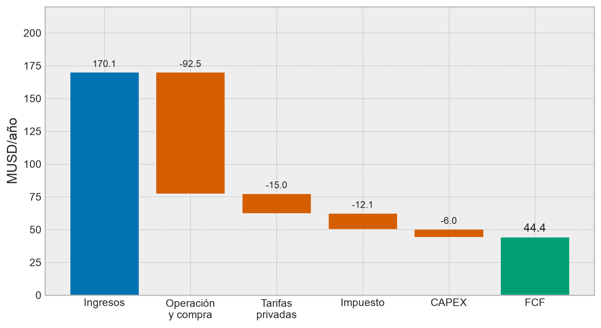
Un contrato escalonado como alternativa de comparación
La asociación debe compararse contra una alternativa explícita. En la estructura de referencia, la Compañía B recibe el flujo de la planta y la Compañía A cobra tres conceptos: Arriendo sobre el producto proveniente de relaves, participación vinculada a un índice de precio y un pago por producto de terceros. El arriendo no se aplica a la producción total, a diferencia del JV.
El índice contractual \(J\) se construye como:
\[ J=50\frac{P_{62}-8}{70} \tag{13} \]
Es una transformación contractual del precio, no el mismo FOB que usamos para las ventas. El 8 corresponde al descuento de transporte propio de este índice, distinto del flete comercial del producto. El 50 es su nivel inicial y el 70 su referencia de normalización. Mantener esa distinción evita alterar involuntariamente las reglas de pago.
La tasa \(a(J)\) depende del tramo en que cae el índice. La participación por tonelada larga es \(a(J)(J-12)\). La tasa se aplica sobre todo el exceso respecto de 12, no solamente sobre la porción dentro del tramo. Por eso aparecen saltos.
| Intervalo del índice \(J\) | Tasa \(a(J)\) |
|---|---|
| \(0<J\leq40\) | 0.0% |
| \(40<J\leq60\) | 4.0% |
| \(60<J\leq80\) | 8.0% |
| \(80<J\leq100\) | 18.0% |
| \(100<J\leq125\) | 25.0% |
| \(125<J\leq150\) | 30.0% |
| \(150<J\leq999\) | 34.0% |
El pago por terceros \(b(J)\) es de 2, 2.5, 3 y 3.8 USD/tonelada larga en los intervalos \((0,60]\), \((60,100]\), \((100,150]\) y \((150,999]\), respectivamente. El pago total antes de impuesto es:
\[ A_{A}^{\mathrm{ref}}=\frac{t_{T}B_{R}+a(J)(J-12)T_{R}+b(J)T_{M}}{1000} \tag{14} \]
Se descuenta de los costos de la planta antes de calcular su FCF. Por lo tanto, los resultados de las partes son \(Y_{A,\mathrm{ref}}=(1-\tau)A_A^{\mathrm{ref}}\) y \(Y_{B,\mathrm{ref}}=V_{\mathrm{ref}}\).
NotaUn ejemplo de cruce de escalón
Justo en \(J=80\) se aplica 8%; inmediatamente por encima se aplica 18%. La participación pasa aproximadamente de \(0.08(80-12)=5.44\) a \(0.18(80-12)=12.24\) USD/tonelada larga. El salto es de 6.80 USD/tonelada larga, aunque el índice apenas cambie. Multiplicado por \(T_R/1000\) entrega el aumento de pago anual en MUSD. La diferencia nace de aplicar una nueva tasa a toda la base acumulada, no de vender mucho más producto.
La implementación debe conservar los extremos abiertos y cerrados. La función searchsorted(..., side="left") de Numpy ubica una igualdad en el tramo que termina en ese umbral. Fuera del dominio tabulado detendremos el cálculo: No sería razonable extrapolar silenciosamente una tasa contractual desconocida:
def legacy_terms(price65):
"""Obtiene tasas del contrato de referencia con extremos superiores
incluidos."""
# Calculamos el índice contractual a partir del precio ajustado.
index = 50.0 * (
np.asarray(price65) - constants["price_spread"] - 8.0
) / 70.0
# Verificamos que el índice esté dentro del dominio contractual
# tabulado.
if np.any((index <= 0) | (index > 999)):
raise ValueError(
"El índice está fuera del dominio contractual tabulado."
)
# Buscamos las tasas y tarifas correspondientes al índice.
rates = np.array([0.0, 0.04, 0.08, 0.18, 0.25, 0.30, 0.34])
fees = np.array([2.0, 2.5, 3.0, 3.8])
# side="left" conserva el tramo inferior cuando el índice iguala el umbral.
rate = rates[np.searchsorted([40, 60, 80, 100, 125, 150], index, side="left")]
fee = fees[np.searchsorted([60, 100, 150], index, side="left")]
return rate * (index - 12.0), fee
def simulate_legacy(inputs, dam_wmt=1.5):
"""Evalúa pagos de referencia y la caja residual de la compañía procesadora."""
# Calculamos la masa y los ingresos a partir de los inputs.
mass = mass_and_revenue(inputs)
participation, fee = legacy_terms(inputs["price65"])
payment = (
dam_wmt * mass["wet_tailings"]
+ participation * mass["long_tailings"]
+ fee * mass["long_third_party"]
) / 1000
# Calculamos los costos y construimos la cascada completa.
cost = operating_cost(inputs, mass) + payment
cash = cash_waterfall(mass["revenue"], cost)
partner_a = (1 - constants["tax_rate"]) * payment
return {
**mass,
**cash,
"cost": cost,
"partner_a": partner_a,
"partner_b": cash["fcf"],
"combined": partner_a + cash["fcf"],
}La función devuelve las mismas métricas finales que el JV, lo que permite comparar estructuras sin cambiar las definiciones. La producción de referencia sigue siendo distinta de la mejorada; más adelante separaremos el efecto operacional del contractual.
Antes de simular, comprobamos cuatro resultados del punto base y una identidad contable. La tolerancia admite el redondeo de los valores de control, no diferencias materiales del modelo:
# Definimos los valores esperados para el punto base.
expected = {
"ebitda": 62.5491187096774,
"fcf": 44.41183903225805,
"partner_b": 31.209519516129028,
"partner_a": 24.456819516129027
}
# Para cada métrica esperada, verificamos que el resultado
# base coincida dentro de la tolerancia.
for metric_i, target_i in expected.items():
np.testing.assert_allclose(
base_result[metric_i],
target_i,
atol=1e-5,
rtol=0,
)
# Luego, verificamos que la identidad de reparto se cumpla.
np.testing.assert_allclose(
base_result["combined"], base_result["fcf"]
+ (1 - constants["tax_rate"])
* (base_result["port"] + base_result["dam"])
)
print("Punto base e identidad de reparto verificados.")Punto base e identidad de reparto verificados.Los valores de control pueden reconstruirse con una calculadora independiente. Con el escenario definido, el producto húmedo es 2000.8 kt/año; su masa seca es 1800.72 kt/año. El precio FOB es aproximadamente 94.4391 USD/t seca y los ingresos son 170.0583 MUSD/año. Los costos suman 107.5092 MUSD/año. Sobre un EBITDA de 62.5491 se resta una depreciación contable de 14; el impuesto de 25% sobre el resultado positivo es 12.1373. Finalmente, restar 6 de CAPEX deja 44.4118 MUSD/año de caja repartible.
Esta cuenta no reutiliza la función simulate_jv() para construir el resultado esperado. Esa independencia es importante: Comparar una función consigo misma, aunque se llame desde otro bloque, no detectaría una fórmula equivocada. Para escenarios más complejos también conviene conservar balances parciales, porque dos errores de signo podrían cancelarse en el total y ocultarse en una sola comparación.
Además de estos controles manuales, conciliamos el motor con las fórmulas guardadas de la planilla. Conciliar significa comparar resultados que representan el mismo concepto, período y unidad, identificar la diferencia y exigir una tolerancia explícita. No basta con que los totales se parezcan después de redondearlos.
En el archivo, A y B identifican los flujos por compañía; en Python usamos partner_a y partner_b. La correspondencia se declara una sola vez. Las restantes claves se comparten entre ambas representaciones:
# Definimos un diccionario que mapea las métricas de Python a las
# correspondientes en la planilla.
metric_mapping = {
"wet_tailings": "wet_tailings",
"wet_third_party": "wet_third_party",
"wet_total": "wet_total",
"fob": "fob",
"revenue": "revenue",
"cost": "cost",
"port": "port",
"dam": "dam",
"ebitda": "ebitda",
"ebit": "ebit",
"tax": "tax",
"fcf": "fcf",
"partner_a": "A",
"partner_b": "B",
"combined": "combined",
}
# Construimos un DataFrame con la comparación entre los resultados en
# Python y la planilla.
regime_comparison = pd.DataFrame(
{
"Python": {key: base_result[key] for key in metric_mapping},
"Planilla": {
key: workbook_outputs.loc[row, "Régimen"]
for key, row in metric_mapping.items()
},
},
)
# Construimos la columna de diferencia entre ambas.
regime_comparison["Diferencia"] = (
regime_comparison["Python"]
- regime_comparison["Planilla"]
)
# Verificamos que las diferencias sean nulas dentro de la tolerancia especificada.
np.testing.assert_allclose(
regime_comparison["Python"],
regime_comparison["Planilla"],
atol=1e-8,
rtol=0,
)El objeto regime_comparison conserva las dos fuentes y su diferencia sin redondear los cálculos. Ahora mostramos una selección financiera; la comprobación anterior también incluyó masas, precio FOB y pagos por infraestructura, cada uno en su unidad correspondiente:
regime_comparison.loc[["revenue", "cost", "ebitda", "tax", "fcf", "partner_a", "partner_b"]]| Python | Planilla | Diferencia | |
|---|---|---|---|
| revenue | 170.058 | 170.058 | 0.000 |
| cost | 107.509 | 107.509 | -0.000 |
| ebitda | 62.549 | 62.549 | 0.000 |
| tax | 12.137 | 12.137 | 0.000 |
| fcf | 44.412 | 44.412 | 0.000 |
| partner_a | 24.457 | 24.457 | 0.000 |
| partner_b | 31.210 | 31.210 | 0.000 |
Las diferencias son nulas a la precisión exigida. Si cambias una entrada del archivo, esta conciliación debe seguir pasando después de recalcular y guardar la planilla. Los controles manuales anteriores, en cambio, documentan específicamente el punto base publicado: Debes revisarlos si decides construir otro caso. Más adelante repetiremos la conciliación sobre todos los años, donde aparece la variación de capital de trabajo.
Una réplica industrial necesita más que esta prueba local. Debe reconciliar ingresos, costos, impuestos y pagos por entidad con el cálculo independiente de referencia, incluyendo precios justo antes, exactamente en y justo después de cada escalón. También debe incluir casos con EBIT negativo. Coincidir en un precio no verifica una función contractual por tramos.
Curva de precio
Una curva determinista mantiene todas las entradas fijas excepto una. No entrega probabilidades, pero permite reconocer umbrales, cambios de pendiente y regiones donde una alternativa supera a otra. Para este caso compararemos cinco estructuras. El contrato de referencia conserva su fórmula escalonada. Los JV permiten separar el efecto de mejorar la operación, cambiar únicamente la participación o renegociar un paquete completo de condiciones. En todos los porcentajes escribiremos primero la participación de A y después la de B.
| Modalidad | Operación | Participación A/B | Puerto | Tranque |
|---|---|---|---|---|
| Contrato de referencia. | Referencia. | Pago escalonado y caja residual. | Según su fórmula. | Según su fórmula. |
| JV con operación de referencia. | Referencia. | 50/50. | 6.0 | 1.5 |
| JV mejorado 50/50. | Mejorada. | 50/50. | 6.0 | 1.5 |
| JV mejorado 60/40. | Mejorada. | 60/40. | 6.0 | 1.5 |
| Paquete alternativo 60/40. | Mejorada. | 60/40. | 4.5 | 2.5 |
Las tarifas de las filas de JV están en USD/t húmeda. Son modalidades económicas del ejemplo, no una clasificación jurídica de asociaciones. El JV mejorado 60/40 aísla el cambio de participación; el último paquete modifica tres decisiones a la vez. Su diferencia respecto del JV mejorado no puede atribuirse íntegramente al 60/40. Esta precaución parece pequeña, pero evita conclusiones engañosas cuando se presentan escenarios compuestos:
# Definimos los contratos alternativos y generamos la curva de precios
# para cada modalidad.
alternative_contract = {"share": 0.60, "port_wmt": 4.5, "dam_wmt": 2.5}
share_only_contract = {**base_contract, "share": 0.60}
prices = np.linspace(40.0, 220.0, 1801)
curves = {
"Contrato de referencia": simulate_legacy({**reference, "price65": prices}),
"JV con operación de referencia": simulate_jv(
{**reference, "price65": prices}, base_contract),
"JV mejorado 50/50": simulate_jv({**base, "price65": prices}, base_contract),
"JV mejorado 60/40": simulate_jv({**base, "price65": prices}, share_only_contract),
"Paquete alternativo 60/40": simulate_jv(
{**base, "price65": prices}, alternative_contract),
}Cada entrada de curves contiene un resultado por precio. Dibujaremos los flujos de las dos partes en filas separadas y con el mismo eje horizontal. Así podemos comprobar si una mejora aparente para una parte coincide con una zona inviable para la otra:
# Mapa de colores a implementar.
colors = ["#555555", "#D55E00", "#0072B2", "#8B4DA8", "#009E73"]
# Inicializamos nuestra figura.
fig, axes = plt.subplots(nrows=2, ncols=1, figsize=(9, 8), sharex=True)
for ax_i, metric_i, title_i in zip(
axes,
["partner_a", "partner_b"],
["Compañía A", "Compañía B"]
):
for (label_j, result_j), color_j in zip(curves.items(), colors):
ax_i.plot(
prices,
result_j[metric_i],
label=label_j,
color=color_j,
linewidth=1.8,
)
ax_i.axhline(0, color="black", linewidth=0.8)
# Rotulamos cada panel y su correspondiente vertical.
ax_i.set_title(title_i, loc="left", fontsize=14, fontweight="bold", pad=10)
ax_i.set_ylabel("MUSD/año", fontsize=12, labelpad=10)
# Rotulamos globalmente y cerramos.
axes[0].legend(fontsize=10, loc="upper left", frameon=True)
axes[1].set_xlabel("Precio 65% Fe (USD/t métrica seca)", fontsize=12, labelpad=10)
fig.subplots_adjust(left=0.11, right=0.98, bottom=0.09, top=0.96, hspace=0.25)
plt.tight_layout()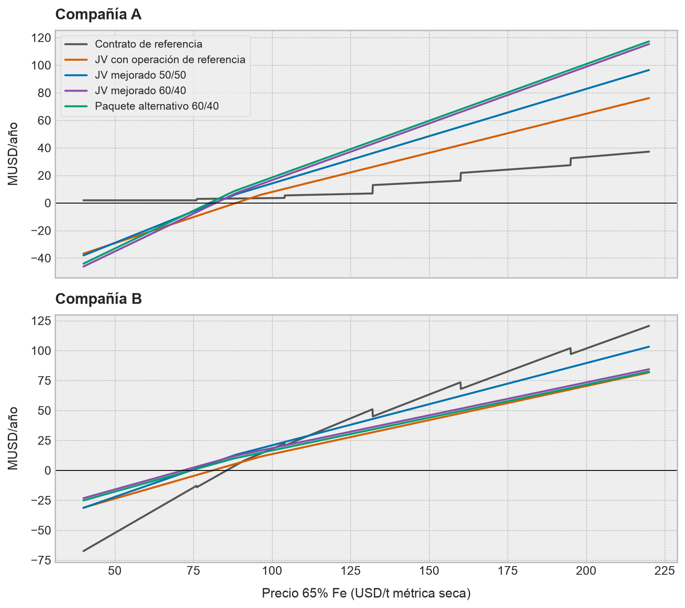
La curva de referencia de la Compañía A sigue creciendo en los tramos altos. Lo que puede aproximarse a un límite es su participación relativa en el valor combinado, no necesariamente su ingreso absoluto. Para distinguir ambas cosas, definimos la participación efectiva \(\rho=Y_{A}/(Y_{A}+Y_{B})\). Solo tiene una lectura sencilla como reparto de una ganancia cuando el denominador es positivo y ambas partes tienen flujos no negativos. Cerca de un denominador cero, la razón se vuelve inestable; con una parte en pérdida puede superar 100%.
También podemos estudiar la participación marginal; es decir, qué fracción de un dólar adicional de valor combinado recibe una parte cuando cambia el precio. Dentro de un tramo regular:
\[ \rho_{\mathrm{marginal}} =\frac{dY_{A}/dP_{65}}{d(Y_{A}+Y_{B})/dP_{65}} \tag{15} \]
En un JV, con producción y tarifas fijas y ambas entidades en el régimen tributario supuesto, el incremento del precio se reparte según \(s\). En el contrato escalonado, la pendiente depende de la tasa vigente. En los saltos la derivada ordinaria no existe; un cociente de diferencias que atraviese un escalón mezcla una discontinuidad con una pendiente. Por eso no utilizaremos una derivada numérica indiscriminada para afirmar qué porcentaje marginal entrega el contrato.
La comparación más directa es la diferencia \(\triangle Y_{A}(P)=Y_{A,\mathrm{JV}}(P)-Y_{A,\mathrm{ref}}(P)\). Un valor positivo favorece al JV para esa parte. Un cruce regular por cero representa indiferencia, pero un salto puede cambiar el signo sin pasar por cero. Cualquier búsqueda automática de umbrales debe separar los intervalos de continuidad.
AdvertenciaUn piso de pago no garantiza un piso que podamos cobrar
La referencia puede mantener pagos positivos a la Compañía A mientras Compañía B tiene flujo negativo. Esa salida es un resultado contractual condicionado a continuidad operacional y cumplimiento. No es una garantía de cobro. Si la planta se detiene o la contraparte no puede financiar pérdidas, debemos incorporar esa respuesta al modelo. Una distribución de pagos exigibles no es todavía una distribución de pagos efectivamente recibidos.
La siguiente figura separa el porcentaje efectivo del valor absoluto de cambiar de contrato. En el panel superior omitimos regiones con valor combinado menor o igual a 5 MUSD/año o con alguna parte en pérdida. Ese umbral de visualización evita amplificar un cociente cuyo denominador es muy pequeño; no elimina esos escenarios del análisis de riesgo.
Preparamos por separado los porcentajes admisibles y la diferencia de flujos. El valor centinela NaN representa regiones que no dibujaremos como porcentajes; conserva los valores económicos originales en curves:
# Calculamos la participación efectiva y la diferencia de flujos para
# cada escenario.
participation_curves = {}
for label_i, result_i in curves.items():
valid = (
(result_i["combined"] > 5)
& (result_i["partner_a"] >= 0)
& (result_i["partner_b"] >= 0)
)
ratio = np.full_like(prices, np.nan)
np.divide(
100 * result_i["partner_a"],
result_i["combined"],
out=ratio,
where=valid,
)
participation_curves[label_i] = ratio
difference = (
curves["JV mejorado 50/50"]["partner_a"]
- curves["Contrato de referencia"]["partner_a"]
)Los arreglos anteriores alimentan dos paneles con el mismo eje de precio. El dibujo no recalcula ninguna regla contractual:
# Construimos nuestra figura.
fig, axes = plt.subplots(nrows=2, ncols=1, figsize=(9, 8), sharex=True)
for (label_i, ratio_i), color in zip(participation_curves.items(), colors):
axes[0].plot(prices, ratio_i, color=color, label=label_i)
axes[1].plot(prices, difference, color="#0072B2")
axes[1].axhline(0, color="black", linewidth=0.8)
# Rotulamos y cerramos.
axes[0].set_title(
"Participación efectiva en caja positiva",
loc="left",
fontsize=14,
fontweight="bold",
pad=10,
)
axes[0].set_ylabel(
"Participación Compañía A (%)",
fontsize=12,
labelpad=10,
)
axes[0].legend(fontsize=9, loc="lower right")
axes[1].set_title(
"Ventaja absoluta del JV mejorado 50/50",
loc="left",
fontsize=14,
fontweight="bold",
pad=10,
)
axes[1].set_xlabel(
"Precio 65% Fe (USD/t métrica seca)",
fontsize=12,
labelpad=10,
)
axes[1].set_ylabel(
"Diferencia (MUSD/año)",
fontsize=12,
labelpad=10,
)
fig.subplots_adjust(left=0.13, right=0.98, bottom=0.09, top=0.96, hspace=0.30)
plt.tight_layout()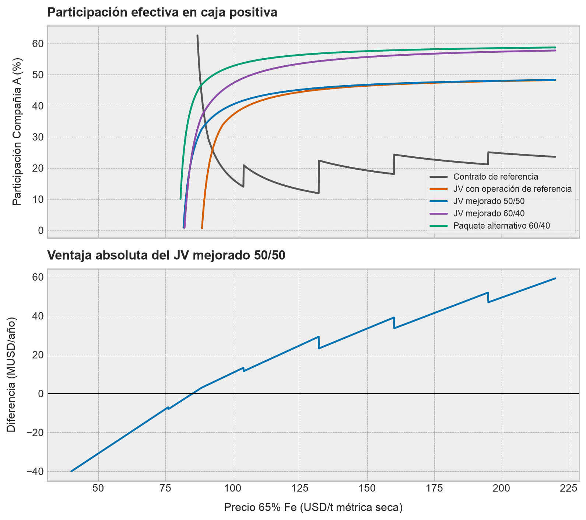
Las caídas de la ventaja relativa coinciden con los aumentos escalonados del pago de referencia. No son deterioros súbitos de la operación del JV. Su identificación importa al negociar una fórmula continua contra una alternativa con umbrales.
También podemos invertir la pregunta: Para un precio y unas tarifas dados, ¿qué participación deja indiferente a la Compañía A? Si \(V\neq0\), igualamos \(sV+(1-\tau)A_T=Y_{A,\mathrm{ref}}\) y despejamos:
\[ s^*(P)=\frac{Y_{A,\mathrm{ref}}(P)-(1-\tau)A_T(P)}{V(P)} \tag{16} \]
Si \(V>0\), una participación \(s\geq s^*\) alcanza o supera la referencia. Si \(V<0\), la desigualdad se invierte: \(s\leq s^*\), porque aumentar participación asigna más pérdidas. Con \(V=0\), el porcentaje no cambia el flujo y debemos comparar directamente el ingreso privado con la referencia. Un resultado fuera de \([0,1]\) indica que la diferencia nula no se alcanza con un reparto admisible a esas tarifas; no corresponde recortarlo y presentarlo como solución.
Este cálculo permite revisar propuestas de porcentaje sin perder de vista la región económica. Una repartición resultante de 60/40 puede aumentar el valor en precios altos y agravar una necesidad de financiamiento en precios bajos. Para juzgar el paquete necesitamos ponderar esos escenarios y definir cuánto riesgo aceptamos.
La ecuación (16) permite dibujar la participación mínima admisible cuando la caja repartible es positiva. Compararemos las tarifas del JV base y las del paquete alternativo. Para cada precio mantenemos la misma operación mejorada y la misma referencia contractual; solo cambia el par de tarifas. Así podemos distinguir una oferta de 60% de una reducción en el porcentaje necesario para igualar la alternativa.
Si \(s^*<0\) y \(V>0\), los pagos privados de la Compañía A ya superan la referencia y el mínimo admisible es cero. Si \(s^*>1\), ni siquiera asignar toda la caja repartible a la Compañía A alcanza al contrato de referencia. Conservaremos el umbral algebraico sin modificarlo y guardaremos por separado el mínimo admisible. Los casos con \(V\leq0\) no se dibujarán como un porcentaje mínimo: Requieren la desigualdad inversa o la comparación directa que acabamos de explicar.
# Definimos los paquetes de tarifas.
tariff_packages = {
"Tarifas base": base_contract,
"Tarifas alternativas": alternative_contract,
}
minimum_shares = {}
# Iteramos sobre cada paquete de tarifas y calculamos el umbral y la
# participación mínima.
for label_i, contract_i in tariff_packages.items():
result = simulate_jv({**base, "price65": prices}, contract_i)
numerator = (
curves["Contrato de referencia"]["partner_a"]
- (1 - constants["tax_rate"])
* result["dam"]
)
threshold = np.full_like(prices, np.nan)
np.divide(
numerator,
result["fcf"],
out=threshold,
where=result["fcf"] > 0,
)
admissible = np.where(
(result["fcf"] > 0) & (threshold <= 1),
np.maximum(0, threshold),
np.nan,
)
minimum_shares[label_i] = {
"threshold": threshold,
"minimum": admissible,
"fcf": result["fcf"],
}
# Identificamos los precios donde ambos paquetes tienen caja no positiva.
both_nonpositive = np.logical_and.reduce(
[item["fcf"] <= 0 for item in minimum_shares.values()]
)Los resultados distinguen tres situaciones: Un porcentaje suficiente dentro del dominio contractual, una exigencia superior a 100% y un régimen de caja no positiva. Dibujamos las propuestas de 50% y 60% como referencias horizontales; son porcentajes de caja repartible, no porcentajes del ingreso total de la Compañía A:
# Iniciamos nuestra figura.
fig, ax = plt.subplots(figsize=(9, 6))
ax.fill_between(
prices,
0,
100,
where=both_nonpositive,
color="#777777",
alpha=0.13,
label="Caja no positiva en ambos paquetes",
)
for (label_i, item_i), color_i in zip(minimum_shares.items(), ["#0072B2", "#009E73"]):
ax.plot(
prices,
100 * item_i["minimum"],
color=color_i,
linewidth=2,
label=label_i,
)
above = np.flatnonzero(item_i["threshold"] > 1)[::30]
ax.scatter(
prices[above],
np.full(len(above), 100),
marker="^",
s=25,
color=color_i,
)
# Dibujamos las líneas de referencia para las propuestas 50/50 y 60/40
# y rotulamos títulos y ejes.
ax.axhline(50, color="#D55E00", linestyle="--", label="Propuesta 50/50")
ax.axhline(60, color="#8B4DA8", linestyle="--", label="Propuesta 60/40")
ax.set_xlabel(
"Precio 65% Fe (USD/t seca)",
fontsize=12,
labelpad=10,
)
ax.set_ylabel(
"Participación mínima de A (%)",
fontsize=12,
labelpad=10,
)
ax.set_ylim(-3, 104)
ax.legend(loc="upper right", fontsize=10)
fig.subplots_adjust(left=0.12, right=0.98, bottom=0.14, top=0.97)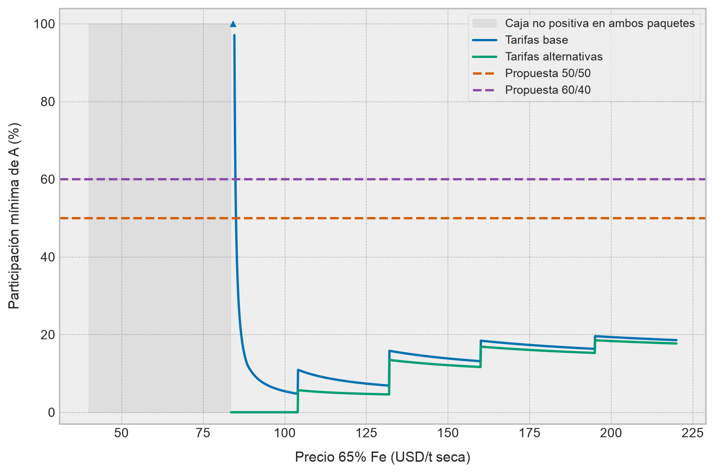
La distancia vertical entre una propuesta y su curva mínima mide la holgura en participación para la Compañía A, dentro del régimen dibujado. No mide el beneficio de la Compañía B ni demuestra que el paquete sea mutuamente aceptable. Los saltos reflejan cambios de tramo del contrato de referencia. Un mínimo puede aumentar bruscamente aunque la operación del JV no cambie.
La franja de caja no positiva tampoco significa que ningún porcentaje pueda mejorar el flujo total de una parte. Sus cobros privados siguen existiendo. Significa que aumentar su participación deja de ser una forma de asignarle más caja positiva. Esta diferencia evita interpretar una región de pérdidas con la regla de negociación equivocada.
Representación de la incertidumbre y comprensión del riesgo
De los supuestos puntuales a una distribución de futuros
Como se aborda en la entrada correspondiente del blog en detalle, una variable aleatoria representa una cantidad cuyo valor aún no conocemos y para la cual especificamos una distribución de probabilidades. Una realización es un valor posible de esa variable. Un escenario combina realizaciones coherentes de todas las entradas inciertas.
La simulación de Monte Carlo consiste en generar muchos de esos escenarios, evaluar el modelo en cada uno y resumir las salidas. Si \(\xi\) reúne precio, alimentación, recuperación y costos, el flujo para una decisión contractual \(x\) es \(Y_{A}(x,\xi)\). El promedio simulado aproxima su esperanza:
\[ \widehat{\mu}_{A} (x)=\frac{1}{N} \sum_{j=1}^{N} Y_{A}(x,\xi_{j} ) \tag{17} \]
La base estadística es la ley de los grandes números: Bajo condiciones apropiadas, el promedio de realizaciones independientes de una variable aleatoria se aproxima a su esperanza (o valor esperado) cuando aumenta el tamaño de la muestra. En nuestro caso necesitamos que la salida tenga una esperanza finita; para usar la fórmula habitual de error estándar también necesitamos varianza finita. Las distribuciones del ejercicio cumplen esas condiciones para las operaciones que estamos aplicando.
La ley no dice que todos los resultados se vuelvan parecidos al aumentar \(N\). La distribución de años malos y buenos sigue siendo amplia. Lo que se estabiliza es nuestra estimación de una propiedad de esa distribución. Aumentar de 20.000 a 40.000 escenarios no vuelve menos riesgosa a la planta: Nos permite describir su riesgo con menor ruido numérico.
La diferencia se aprecia especialmente en una probabilidad de pérdida. Si \(I_{j}\) vale 1 cuando la caja de un escenario es negativa y 0 en caso contrario, el promedio de esos indicadores estima la probabilidad. Su error estándar aproximado bajo independencia es:
\[ \widehat p=\frac{1}{N}\sum_{j=1}^{N}\mathbf{1}\{Y_j<0\}\quad; \quad \operatorname{SE}(\widehat p)\approx\sqrt{\frac{\widehat p(1-\widehat p)}{N}} \tag{18} \]
El símbolo \(\mathbf{1}\{\cdot\}\) hace referencia a la función indicatriz. No mide cuánto se pierde, solo si el evento ocurre. Por eso necesitaremos otra métrica para la severidad. Además, la aproximación puede ser poco informativa para eventos muy raros con pocos casos observados: No ver pérdidas en una muestra finita no demuestra, de manera efectiva, que su probabilidad sea igual a cero.
La esperanza es un promedio bajo la distribución elegida; no es el año más probable ni tampoco una especie de promesa o compromiso. Cuando hay impuestos por tramos, productos entre variables y pagos escalonados, evaluar el modelo en los promedios de entrada tampoco reproduce necesariamente el promedio de salida.
Antes de escoger distribuciones separaremos dos grupos. El precio del hierro, la recuperación anual y ciertos costos son incertidumbres de naturaleza exógena. El porcentaje de participación y las tarifas son decisiones que deseamos evaluar. Podemos explorar una banda de negociación, pero no debemos sortear las tarifas de cada candidato y después afirmar que optimizamos una decisión fija. Aquí cada contrato permanece fijo durante su evaluación.
Hay tres fuentes de incertidumbre que conviene mantener separadas. La primera es la variación del futuro, como un precio que aún no conocemos. La segunda es la incertidumbre sobre los parámetros con que describimos ese futuro, como una volatilidad estimada con pocos años de datos. La tercera es la incertidumbre de modelo: Podemos haber omitido una relación física, una decisión de cierre o una cláusula que cambia el resultado.
La simulación principal representa la primera fuente condicionalmente a parámetros fijos. La prueba de tensión explora parte de la segunda y de la tercera, pero no las agota. Si presentamos un intervalo de Monte Carlo como si incluyera todas ellas, estaremos atribuyendo al cálculo una certeza que no tiene.
También importa la escala temporal. Un precio diario puede variar mucho dentro de un año sin que su promedio anual tenga la misma dispersión. Como nuestro motor representa resultados anuales, las distribuciones deben describir entradas anuales compatibles. Usar directamente la volatilidad de variaciones diarias como proxies de variabilidad de niveles anuales sería mezclar objetos distintos. Antes de ajustar una distribución necesitamos definir qué observación representa una fila de nuestros datos.
El coeficiente de variación, \(\mathrm{CV}=\sigma/\mu\), mide dispersión relativa: Divide la desviación estándar por la media. Un CV de 25% con media de 100 implica desviación estándar de 25, no un intervalo que obliga al precio a permanecer entre 75 y 125.
| Entrada | Distribución del ejercicio | Centro o parámetros | Dispersión |
|---|---|---|---|
| Recuperación de relave | Beta | Media 0.095 | CV 0.15 |
| Recuperación de terceros | Beta | Media 0.62 | CV 0.18 |
| Alimentación de relave | Normal truncada en cero | Localización 18000 kt/año | Escala igual a 12% de la localización |
| Alimentación de terceros | Beta-PERT | Mínimo 100, moda 800, máximo 1600 kt/año | Concentración 4 |
| Precio 65% Fe | Lognormal condicionada a precio mayor que 20 | Media de la distribución original 115 | CV original 0.30 |
| Flete húmedo | Lognormal | Media 20 USD/t | CV 0.20 |
| Costos efectivos de conversión | Lognormal | Medias del escenario mejorado | CV 0.18 |
Los coeficientes de variación son parámetros de dispersión adoptados para el estudio; la banda PERT es un supuesto de disponibilidad de material. Una banda experta y una estimación estadística no tienen la misma calidad de evidencia. Para calibrar una aplicación nueva, hay que separar observaciones realizadas, presupuestos y proyecciones, comprobar sus períodos y unidades y calcular la dispersión con una muestra comparable. Una columna que contiene años futuros no debe tratarse íntegramente como historia observada.
Tampoco basta con que una distribución tenga el soporte correcto. La alimentación normal truncada evita masas negativas, pero no incorpora una capacidad máxima de planta. En este ejercicio dejamos esa capacidad sin restricción explícita; si se conoce una capacidad vinculante, hay que incorporarla antes de aceptar escenarios de alta alimentación. Una interrupción total de suministro puede requerir una probabilidad puntual en cero, que una distribución PERT continua no es capaz de proporcionar.
NotaRecursos para reproducir las distribuciones
La documentación de distribuciones de Scipy describe los objetos utilizados aquí. El método ppf() calcula percentiles; es decir, valores asociados a probabilidades acumuladas. En la normal truncada, los límites se expresan en unidades estandarizadas respecto de loc y scale, no directamente en toneladas. Las referencias completas están incorporadas a la bibliografía del blog.
La distribución elegida debe responder dos preguntas: Qué valores son posibles y cómo se reparte la probabilidad entre ellos. El soporte responde la primera. La densidad, los percentiles y los parámetros responden la segunda. Una distribución normal tiene soporte ilimitado a ambos lados, por lo que puede asignar recuperaciones negativas o mayores que uno. Notemos que, incluso si esas probabilidades son pequeñas, no convierte la elección en físicamente exacta.
Un percentil permite recorrer la distribución mediante probabilidades. Si el percentil 0.1 del precio es 75, significa que aproximadamente el 10% de la probabilidad queda en precios menores o iguales a 75. Para generar una realización podemos sortear una probabilidad uniforme \(U\) entre 0 y 1 y evaluar \(F^{-1}(U)\), donde \(F\) es la función de distribución acumulada. Esta construcción será útil tanto para simular marginales independientes como para introducir dependencia sin cambiarlas.
Distribuciones acotadas para recuperaciones: Una distribución beta tiene soporte entre 0 y 1. Si deseamos media \(\mu\) y varianza \(v=(\mu\mathrm{CV})^2\), sus parámetros de forma se obtienen de:
\[ \kappa =\frac{\mu (1-\mu )}{v} -1\quad ;\quad \alpha =\mu \kappa \quad ;\quad \beta =(1-\mu )\kappa \tag{19} \]
Se requiere \(0<v<\mu(1-\mu)\). No cualquier combinación de media y dispersión puede corresponder a una fracción acotada. La función comprobará esa condición.
Distribuciones positivas para precios y costos: Una variable lognormal es aquella cuyo logaritmo sigue una distribución normal. Si \(X\) debe tener media \(\mu\) y CV conocido, los parámetros de \(\log X\) son:
\[ \sigma_{\log}^{2} =\log (1+\mathrm{CV}^{2} )\quad ;\quad \mu_{\log} =\log (\mu )-\frac{\sigma_{\log}^{2}}{2} \tag{20} \]
El logaritmo no tiene media \(\log(\mu)\) salvo en el caso degenerado sin dispersión. Omitir el segundo término desplazaría la media de la variable original.
Una banda con valor más probable: La distribución Beta-PERT reescala una beta al intervalo \([a,b]\), usando una moda \(m\) y una concentración \(\lambda\). Con \(\lambda=4\):
\[ \alpha =1+4\frac{m-a}{b-a} \quad ;\quad \beta =1+4\frac{b-m}{b-a} \quad ;\quad \mathrm{E} [X]=\frac{a+4m+b}{6} \tag{21} \]
Para nuestra alimentación de preconcentrado, la media es aproximadamente 816.67 kt/año y la moda 800. Esta diferencia es parte del supuesto, no un error del generador.
def beta_from_mean_cv(mean, cv):
"""
Construye una beta a partir de una media y una dispersión físicamente
admisibles.
"""
# Calcula la varianza a partir de la media y el coeficiente de variación.
variance = (mean * cv) ** 2
if not 0 < mean < 1 or not 0 < variance < mean * (1 - mean):
raise ValueError("Media y dispersión incompatibles con una beta.")
# La concentración controla la dispersión sin desplazar la media.
concentration = mean * (1 - mean) / variance - 1
return stats.beta(mean * concentration, (1 - mean) * concentration)
def lognormal_from_mean_cv(mean, cv):
"""
Transforma momentos de la variable original a parámetros de su logaritmo.
"""
# Los parámetros siguientes pertenecen a log(X), no a X.
sigma = np.sqrt(np.log1p(cv ** 2))
mu = np.log(mean) - sigma ** 2 / 2
return stats.lognorm(s=sigma, scale=np.exp(mu))
def pert(low, mode, high):
"""
Representa un intervalo experto y una moda mediante una beta reescalada.
"""
# La distribución PERT se construye a partir de los parámetros del
# intervalo y la moda.
if not low < mode < high:
raise ValueError("La moda debe estar dentro del intervalo.")
alpha = 1 + 4 * (mode - low) / (high - low)
beta = 1 + 4 * (high - mode) / (high - low)
return stats.beta(alpha, beta, loc=low, scale=high - low)Quedaron definidos tres constructores de distribuciones. Ahora les entregamos los parámetros de cada entrada para construir marginals, sin generar todavía escenarios aleatorios:
# Construimos las distribuciones marginales a partir de los parámetros
# base y los constructores definidos.
marginals = {
"tailings_recovery": beta_from_mean_cv(
base["tailings_recovery"],
0.15,
),
"third_party_recovery": beta_from_mean_cv(
base["third_party_recovery"],
0.18,
),
"tailings_kt": stats.truncnorm(
-1 / 0.12,
np.inf,
loc=base["tailings_kt"],
scale=base["tailings_kt"] * 0.12,
),
"third_party_kt": pert(100, base["third_party_kt"], 1600),
"price65": lognormal_from_mean_cv(base["price65"], 0.30),
"freight_wmt": lognormal_from_mean_cv(base["freight_wmt"], 0.20),
"tailings_cost": lognormal_from_mean_cv(base["tailings_cost"], 0.18),
"third_party_cost": lognormal_from_mean_cv(base["third_party_cost"], 0.18),
}El objeto marginals almacena una distribución por variable. Se denominan distribuciones marginales porque describen cada entrada por separado; todavía no hemos especificado cómo se relacionan entre ellas. Para comenzar, supondremos independencia. Esa es una hipótesis del experimento, no una propiedad demostrada de la operación.
La relación \(P_{62}=P_{65}-12\) tampoco admite cualquier precio. Para mantener positivo el índice contractual, condicionaremos \(P_{65}>20\). Si \(F\) es la distribución original y \(U\) es uniforme entre 0 y 1, \(F^{-1}(F(20)+(1-F(20))U)\) genera esa distribución condicionada. Esto renormaliza probabilidades; no acumula artificialmente una masa en el límite como haría recortar valores con la función maximum().
def sample_inputs(size, seed):
"""
Genera escenarios independientes, manteniendo fijas las entradas no
sorteadas.
"""
# Semilla aleatoria para garantizar reproducibilidad del experimento.
rng = np.random.default_rng(seed)
# Definimos las entradas inciertas a partir de las distribuciones marginales.
inputs = dict(base)
# Iteramos sobre cada entrada incierta y generamos muestras a partir de
# su distribución marginal.
for name_i, distribution_i in marginals.items():
uniform = rng.uniform(size=size)
if name_i == "price65":
# Calculamos la probabilidad acumulada hasta el límite inferior.
lower_probability = distribution_i.cdf(20.0)
uniform = lower_probability + (1 - lower_probability) * uniform
uniform = np.clip(uniform, 1e-12, 1 - 1e-12)
inputs[name_i] = distribution_i.ppf(uniform)
return inputsLa función devuelve un diccionario con un arreglo por entrada incierta. El siguiente bloque fija el tamaño de la muestra, genera escenarios y evalúa el contrato base sobre ellos.
sample_size = 20000
training_inputs = sample_inputs(sample_size, seed=20261116)
simulated = simulate_jv(training_inputs, base_contract)
print(f"Probabilidad original de P65 <= 20: {marginals['price65'].cdf(20):.3e}")Probabilidad original de P65 <= 20: 3.090e-09La semilla permite reproducir la muestra: Con el mismo código y generador obtenemos los mismos números. No prueba que la distribución sea correcta. El precio de 62% se deriva dentro del motor, de modo que nunca se sortea como si fuera independiente del de 65%.
La probabilidad excluida por el límite es diminuta bajo estos parámetros. Aun así, dejar explícito el dominio es preferible a introducir precios imposibles en un contrato que no define cómo tratarlos. Una distribución con mucha masa fuera del dominio requeriría reformular el escenario, no simplemente descartar una parte importante de sus resultados.
Lectura del riesgo y sensibilidad
Para resumir una distribución de caja calcularemos su media, percentiles 0.1 y 0.9 y frecuencia de valores negativos. Un percentil 0.1 es un umbral por debajo del cual queda aproximadamente el 10% de los resultados. No confundir con el promedio de ese grupo.
También calcularemos la media de la cola inferior del 10%, que denominaremos \(\mathrm{LCVaR}_{0.10}\). Usamos esta notación para recordar que estamos mirando ganancias bajas, no pérdidas positivas en una cola superior. Una definición que funciona incluso cuando existen masas puntuales es:
\[ \mathrm{LCVaR}_{q} (Y)=\frac{1}{q} \int_{0}^{q} F_{Y}^{-1}(u)\, du \tag{22} \]
En una muestra con \(qN\) entero, basta con ordenar y promediar los \(qN\) valores menores. Un resultado de \(-20\) MUSD significa que el peor 10% tiene, en promedio, esa necesidad de caja. No significa que la pérdida máxima esté limitada a 20:
def lower_tail_mean(values, fraction=0.10):
"""
Promedia exactamente la fracción inferior de una muestra, sin ordenar
el resto.
"""
# Llevamos los valores a un arreglo de Numpy para facilitar el manejo.
values = np.asarray(values)
# Comprobamos que la fracción sea válida y que el arreglo no esté vacío.
if not 0 < fraction <= 1 or values.ndim != 1 or values.size == 0:
raise ValueError(
"Se requiere un vector no vacío y una fracción entre 0 y 1."
)
# Calculamos el número de elementos que corresponden a la fracción
# inferior.
count = fraction * len(values)
# Comprobamos que el número de elementos sea un entero, como requiere
# la definición.
if not np.isclose(count, round(count)):
raise ValueError(
"Elegir un tamaño de muestra con qN entero."
)
# Realizamos la partición para obtener los elementos más pequeños sin
# ordenar toda la muestra.
count = int(round(count))
return np.partition(values, count - 1)[:count].mean()
def summarize(values):
"""
Resume rentabilidad, frecuencia de pérdidas, cola inferior y error
numérico.
"""
# Nuevamente llevamos los valores a un arreglo de Numpy para facilitar el
# manejo.
values = np.asarray(values)
return {
"Media": values.mean(), "P10": np.quantile(values, 0.10),
"P90": np.quantile(values, 0.90),
"Probabilidad de pérdida": np.mean(values < 0),
"Media peor 10%": lower_tail_mean(values),
"Error estándar de la media": values.std(ddof=1) / np.sqrt(len(values)),
}Ya podemos calcular las mismas métricas para cualquier vector de resultados. Aplicamos esa definición, sin modificarla entre entidades, al flujo de la planta y al de ambas compañías:
pd.DataFrame(
{
label: summarize(simulated[key]) for label, key in
[
("FCF planta", "fcf"),
("Compañía A", "partner_a"),
("Compañía B", "partner_b"),
]
},
).T| Media | P10 | P90 | Probabilidad de pérdida | Media peor 10% | Error estándar de la media | |
|---|---|---|---|---|---|---|
| FCF planta | 42.993 | -17.982 | 109.347 | 0.186 | -36.967 | 0.372 |
| Compañía A | 23.762 | -6.813 | 57.031 | 0.164 | -16.225 | 0.186 |
| Compañía B | 30.556 | -0.162 | 64.198 | 0.101 | -9.523 | 0.188 |
En esta muestra, el FCF medio de la planta es aproximadamente 42.99 MUSD/año, frente a los 44.41 del cálculo determinista. Su probabilidad simulada de pérdida es cercana a 18.6%, y el promedio del peor 10% llega aproximadamente a -36.97 MUSD/año. Un promedio positivo convive, por tanto, con necesidades importantes de financiamiento en escenarios adversos.
La Compañía A presenta una media cercana a 23.76 MUSD/año y una probabilidad de pérdida de 16.4%; para B esos valores son aproximadamente 30.56 y 10.1%. Los pagos privados modifican la exposición por entidad. Si solo miráramos el FCF de la planta, perderíamos precisamente la diferencia que interesa para diseñar el contrato.
Las probabilidades de esta tabla están en escala de cero a uno. Son frecuencias simuladas bajo los supuestos de esta sección. No deben reemplazarse por cifras de otro experimento que haya sorteado únicamente precio o que también haya sorteado tarifas. Distintos conjuntos de incertidumbres producen distribuciones diferentes.
La última columna mide el error asociado a la simulación de Monte Carlo: La incertidumbre numérica del promedio debido a usar una muestra finita. Para escenarios independientes su magnitud se aproxima mediante \(s_Y/\sqrt{N}\). Reducir ese error a la mitad requiere aproximadamente cuadruplicar \(N\). No corrige un costo mal modelado, una correlación omitida ni una distribución equivocada.
La distribución del FCF muestra dónde se concentra la caja de la planta y qué parte de la muestra exige financiamiento. Más adelante volveremos a los mismos escenarios para ubicarlos en el plano de flujos de ambas compañías y superponer las alternativas de negociación:
# Construimos nuestra figura.
fig, ax = plt.subplots(figsize=(9, 5))
ax.hist(simulated["fcf"], bins=65, color="#0072B2", alpha=0.8)
ax.axvline(0, color="#D55E00", linewidth=1.5)
# Realizamos el etiquetado de los ejes y ajustes finales.
ax.set_title(
"Distribución del FCF de la planta bajo el contrato fijo",
fontsize=14,
fontweight="bold",
loc="left",
pad=10,
)
ax.set_xlabel(
"FCF de la planta (MUSD/año)",
fontsize=12,
labelpad=10,
)
ax.set_ylabel(
"Escenarios",
fontsize=12,
labelpad=10,
)
fig.subplots_adjust(left=0.12, right=0.98, bottom=0.16, top=0.97)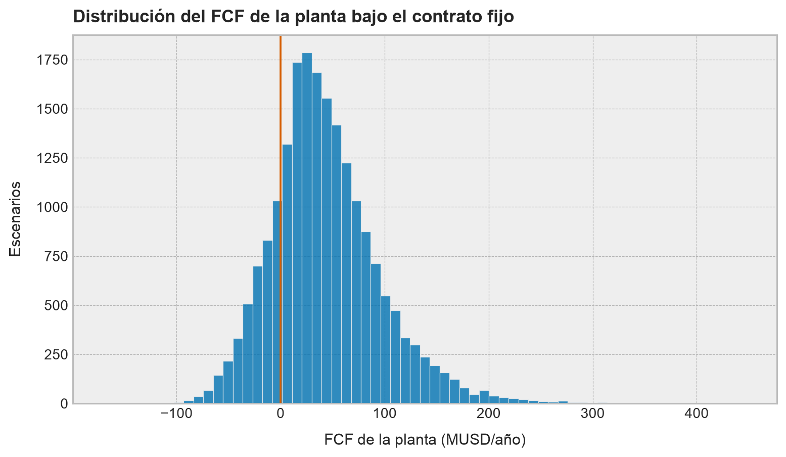
Un precio alto suele elevar la caja de ambas partes; uno bajo puede perjudicar a ambas. Esa exposición compartida puede coexistir con intereses contrapuestos al negociar tarifas. La variación del mercado mueve el negocio; el reparto mueve la asignación de un negocio dado.
NotaLa misma media puede esconder decisiones diferentes
Consideremos dos contratos hipotéticos para una misma parte. El primero paga 10 MUSD con certeza. El segundo entrega 30 MUSD en la mitad de los casos y exige aportar 10 MUSD en la otra mitad. Ambos tienen esperanza de 10 MUSD, pero solo el segundo requiere capacidad de financiar pérdidas. Si esa capacidad no existe, la igualdad de medias tiene poca utilidad para decidir.
La cola inferior responde a una pregunta concreta de financiamiento. En lugar de preguntar por el peor valor observado, que puede cambiar mucho cuando agregamos escenarios, preguntamos por el resultado medio dentro de una fracción desfavorable definida de antemano. La elección de 10% no es universal: Una organización puede querer mirar 5%, 1% o un conjunto de escenarios de tensión. Lo importante es conservar la definición al comparar contratos y disponer de suficientes observaciones en esa región.
También debemos distinguir sensibilidad de control. Un precio puede ser la variable con mayor efecto y, al mismo tiempo, estar fuera de la negociación. Una tarifa puede tener menos efecto sobre la caja total y ser directamente negociable. La sensibilidad indica dónde cambia el resultado; el diseño de decisiones identifica qué palancas podemos mover y qué consecuencias aceptamos.
Comparación de las modalidades por retorno y riesgo
Las curvas de precio mostraban el comportamiento de cada modalidad manteniendo fija la operación. Ahora necesitamos comparar distribuciones completas. Un ranking exige declarar su criterio: Ordenaremos por flujo medio de cada parte, de mayor a menor, y mostraremos al lado su banda P10–P90 y su probabilidad de pérdida. El orden puede cambiar cuando cambiamos de compañía o damos prioridad a la cola inferior.
Para que la comparación sea interpretable, cada alternativa enfrentará los mismos precios y fletes y el mismo nivel relativo de exigencia operacional. Esta técnica se denomina números aleatorios comunes: Emparejamos los escenarios en vez de sortear otro mercado para cada contrato. Si el escenario ocupa el P10 de recuperación en la operación mejorada, también usaremos el P10 de la recuperación de referencia, pero con su propia distribución.
En la operación de referencia conservaremos el coeficiente de variación asociado a la recuperación, reemplazando su media por 8.5%. Escalaremos la alimentación complementaria y los costos por la razón entre sus puntos base. Así mantenemos la forma relativa de esas distribuciones, pero trasladamos sus niveles al escenario correspondiente. Es un supuesto comparativo explícito; no una calibración histórica adicional. La transformación por cuantiles de la recuperación respeta su soporte entre cero y uno:
def reference_scenarios(improved_inputs):
"""
Empareja la operación de referencia con los escenarios de la
mejorada.
"""
result = dict(improved_inputs)
# Recuperación: Mismo cuantil y mismo CV, con otra media físicamente
# válida.
quantiles = (
marginals["tailings_recovery"]
.cdf(improved_inputs["tailings_recovery"])
)
result["tailings_recovery"] = beta_from_mean_cv(
reference["tailings_recovery"], 0.15
).ppf(np.clip(quantiles, 1e-12, 1 - 1e-12))
# Magnitudes positivas: Igual choque proporcional sobre niveles
# diferentes.
for key_i in ["third_party_kt", "tailings_cost", "third_party_cost"]:
result[key_i] = improved_inputs[key_i] * reference[key_i] / base[key_i]
return resultLa función reference_scenarios() conserva la correspondencia entre futuros. Ahora evaluamos exactamente las cinco modalidades de las curvas de negocio y calculamos sus métricas con la función summarize(). Las tarifas son decisiones fijas dentro de cada modalidad; no se sortean como si fueran riesgo de mercado:
# Realizamos la simulación de escenarios de referencia a partir de
# los inputs de entrenamiento.
reference_draws = reference_scenarios(training_inputs)
# Construimos las muestras de negocio a partir de los escenarios de
# referencia.
business_samples = {
"Contrato de referencia": simulate_legacy(reference_draws),
"JV con operación de referencia": simulate_jv(
reference_draws,
base_contract,
),
"JV mejorado 50/50": simulated,
"JV mejorado 60/40": simulate_jv(
training_inputs,
share_only_contract,
),
"Paquete alternativo 60/40": simulate_jv(
training_inputs,
alternative_contract,
),
}
# Calculamos los rankings de cada compañía según los resultados
# simulados.
business_rankings = {}
for party_i in ["partner_a", "partner_b"]:
table = pd.DataFrame({
label: summarize(result[party_i])
for label, result in business_samples.items()
}).T
table = table.sort_values("Media", ascending=False)
table.insert(0, "Puesto", np.arange(1, len(table) + 1))
business_rankings[party_i] = table
# Ambos paneles usarán la misma escala monetaria para comparar amplitudes.
all_limits = np.concatenate(
[
table[["P10", "P90"]].to_numpy().ravel()
for table in business_rankings.values()
],
)
# Definimos los límites de la escala para los gráficos de ranking.
rank_left, rank_right = min(-5, all_limits.min() - 5), all_limits.max() + 9Cada tabla contiene el ranking de una compañía. Una línea gruesa representará el intervalo entre sus percentiles 10 y 90, y un rombo representará la media. La banda no es un intervalo de confianza de la media: Describe dispersión de resultados económicos. La columna derecha mostrará la frecuencia simulada de flujo negativo, calculada sobre los 20000 escenarios completos:
# Definimos los colores para cada modalidad de negocio.
business_colors = dict(zip(curves, colors))
# Iniciamos nuestra figura.
fig, axes = plt.subplots(
nrows=2,
ncols=1,
figsize=(9, 9),
sharex=True,
)
parties = ["partner_a", "partner_b"]
companies = ["Compañía A", "Compañía B"]
for ax_i, party_i, title_i in zip(axes, parties, companies):
table = business_rankings[party_i]
ax_i.axvspan(rank_left, 0, color="#B33939", alpha=0.08)
ax_i.axvline(0, color="#444444", linewidth=1)
for position_j, (label_j, row_j) in enumerate(table.iterrows()):
color_j = business_colors[label_j]
ax_i.hlines(
position_j,
row_j["P10"],
row_j["P90"],
color=color_j,
linewidth=10,
alpha=0.32,
)
ax_i.scatter(
row_j["Media"],
position_j,
marker="D",
color=color_j,
edgecolor="white",
s=65,
zorder=3,
)
ax_i.annotate(
f"{row_j['Media']:.1f}",
(row_j["Media"], position_j),
xytext=(0, 11),
textcoords="offset points",
ha="center",
fontsize=9,
)
ax_i.text(
1.03,
position_j,
f"{row_j['Probabilidad de pérdida']:.1%}",
transform=ax_i.get_yaxis_transform(),
va="center",
fontsize=9,
)
ax_i.set_yticks(
range(len(table)),
[f"{i + 1}. {label_j}" for i, label_j in enumerate(table.index)],
)
ax_i.tick_params(axis="y", labelsize=10)
ax_i.set_ylim(len(table) - 0.5, -0.65)
ax_i.set_xlim(rank_left, rank_right)
ax_i.set_title(
title_i,
loc="left",
fontsize=14,
fontweight="bold",
pad=10,
)
ax_i.text(
1.03,
1.02,
"Prob. de\npérdida",
transform=ax_i.transAxes,
fontsize=9,
)
# Rotulado final.
axes[1].set_xlabel(
"Flujo recibido (MUSD/año)",
fontsize=12,
labelpad=10,
)
fig.subplots_adjust(left=0.32, right=0.88, bottom=0.08, top=0.94, hspace=0.32)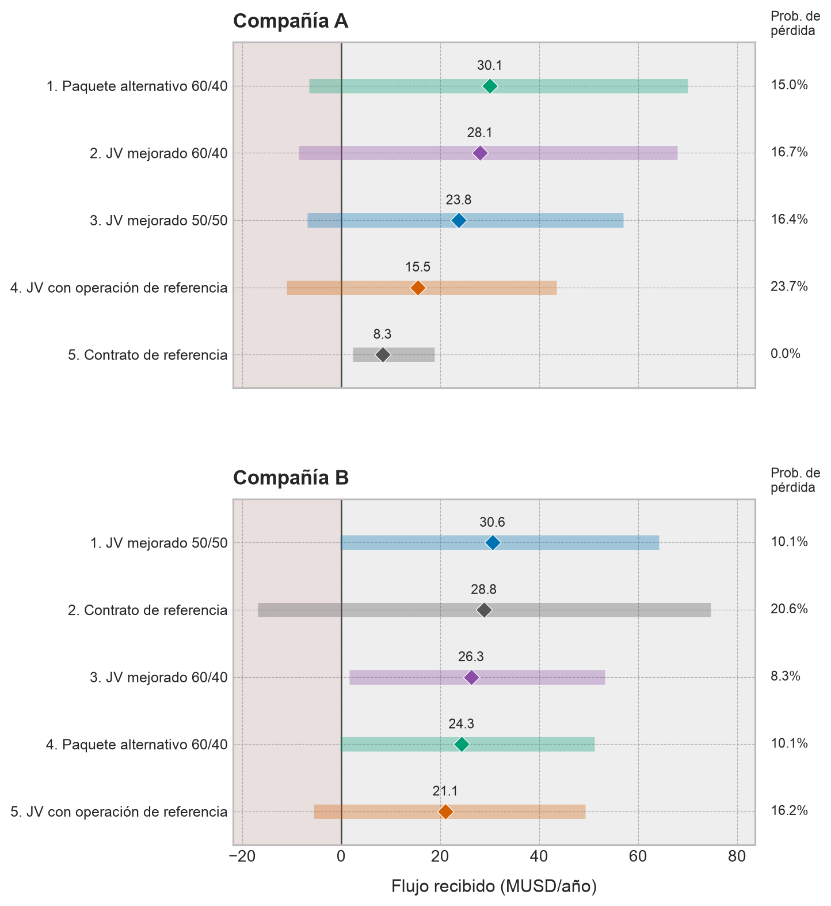
El orden de A no debe leerse como una recomendación para B. Cambiar únicamente de 50/50 a 60/40 entrega a A una mayor fracción tanto de las ganancias como de los déficits de la planta. El paquete alternativo también cambia tarifas, por lo que su efecto combina reparto y transferencias privadas. Compararlo con el JV 60/40 de tarifas constantes permite separar ambos mecanismos.
En esta muestra, el paquete alternativo encabeza el ranking de A con aproximadamente 30.1 MUSD/año de flujo medio, pero entrega a B unos 24.3 MUSD/año, frente a los 30.6 del JV mejorado 50/50. Para B, ese 50/50 ocupa el primer lugar por media. El JV 60/40 con tarifas constantes reduce su probabilidad de pérdida a aproximadamente 8.3%, a costa de una media menor. Por tanto, incluso para una misma compañía, ordenar por media u ordenar por frecuencia de pérdida conduce a preferencias diferentes.
Para evaluar severidad además de frecuencia, conservamos una tabla con el promedio del peor 10%. Una opción puede tener una media alta y exigir más financiación precisamente cuando la operación está estresada:
pd.concat(
{
"Compañía A": business_rankings["partner_a"],
"Compañía B": business_rankings["partner_b"]},
names=["Parte", "Modalidad"]
)[
[
"Puesto",
"Media",
"P10",
"P90",
"Probabilidad de pérdida",
"Media peor 10%",
]
]| Puesto | Media | P10 | P90 | Probabilidad de pérdida | Media peor 10% | ||
|---|---|---|---|---|---|---|---|
| Parte | Modalidad | ||||||
| Compañía A | Paquete alternativo 60/40 | 1 | 30.058 | -6.511 | 70.017 | 0.150 | -17.819 |
| JV mejorado 60/40 | 2 | 28.061 | -8.565 | 67.952 | 0.167 | -19.921 | |
| JV mejorado 50/50 | 3 | 23.762 | -6.813 | 57.031 | 0.164 | -16.225 | |
| JV con operación de referencia | 4 | 15.459 | -11.015 | 43.456 | 0.237 | -19.172 | |
| Contrato de referencia | 5 | 8.347 | 2.325 | 18.896 | 0.000 | 1.882 | |
| Compañía B | JV mejorado 50/50 | 1 | 30.556 | -0.162 | 64.198 | 0.101 | -9.523 |
| Contrato de referencia | 2 | 28.825 | -16.873 | 74.605 | 0.206 | -32.572 | |
| JV mejorado 60/40 | 3 | 26.257 | 1.647 | 53.290 | 0.084 | -5.853 | |
| Paquete alternativo 60/40 | 4 | 24.317 | -0.176 | 51.216 | 0.101 | -7.667 | |
| JV con operación de referencia | 5 | 21.078 | -5.580 | 49.306 | 0.163 | -13.566 |
Esta comparación mantiene el supuesto de que los pagos del contrato de referencia se cumplen incluso cuando la compañía procesadora necesita aportar caja. Una probabilidad reducida de pérdida para su receptor describe la fórmula de pago, no elimina riesgo de contraparte. Tampoco seleccionamos todavía un contrato óptimo: El ranking muestra preferencias bajo un criterio, mientras la negociación debe incorporar las condiciones de aceptación de ambas partes.
Para explorar qué entradas influyen más construiremos un análisis de sensibilidad univariado: Variamos una entrada entre sus percentiles 10 y 90 mientras las demás permanecen en el punto base. El gráfico de tornado ordena las amplitudes de salida. No descompone la varianza ni mide interacciones, porque no combina entradas simultáneamente:
# Inicializamos una lista en la cual almacenaremos nuestros resultados.
sensitivity_rows = []
# Definimos etiquetas legibles para cada variable de entrada.
labels = {
"tailings_recovery": "Recuperación de relave",
"third_party_recovery": "Recuperación de terceros",
"tailings_kt": "Alimentación de relave",
"third_party_kt": "Alimentación de terceros",
"price65": "Precio del hierro",
"freight_wmt": "Flete",
"tailings_cost": "Costo de conversión de relave",
"third_party_cost": "Costo de conversión de terceros",
}
# Iteramos sobre cada variable de entrada y calculamos el efecto
# de moverla entre sus percentiles P10 y P90.
for name_i, distribution_i in marginals.items():
low, high = distribution_i.ppf([0.10, 0.90])
low_result = simulate_jv(
{**base, name_i: low},
base_contract,
)["fcf"]
high_result = simulate_jv(
{**base, name_i: high},
base_contract,
)["fcf"]
sensitivity_rows.append(
{
"Variable": labels[name_i],
"P10 entrada": low_result,
"P90 entrada": high_result,
"Amplitud": abs(high_result - low_result),
},
)
# Creamos un DataFrame con los resultados y calculamos el mínimo de
# cada fila para usarlo como base del gráfico tornado.
sensitivity = pd.DataFrame(sensitivity_rows).sort_values("Amplitud")
left = sensitivity[["P10 entrada", "P90 entrada"]].min(axis=1)Ahora conocemos el resultado al mover cada entrada por separado. Para costos, el percentil alto de la entrada suele producir el flujo bajo de salida; por eso conservamos ambos extremos sin asumir que siempre tienen el mismo orden:
# Iniciamos nuestra figura.
fig, ax = plt.subplots(figsize=(9, 5))
ax.barh(
sensitivity["Variable"],
sensitivity["Amplitud"],
left=left,
color="#0072B2",
)
ax.axvline(
base_result["fcf"],
color="#D55E00",
linestyle="--",
label="Punto base",
)
# Rotulamos y cerramos.
ax.set_xlabel(
"FCF de la planta (MUSD/año)",
fontsize=12,
labelpad=10,
)
ax.legend(loc="lower right", fontsize=10)
fig.subplots_adjust(left=0.35, right=0.98, bottom=0.14, top=0.97)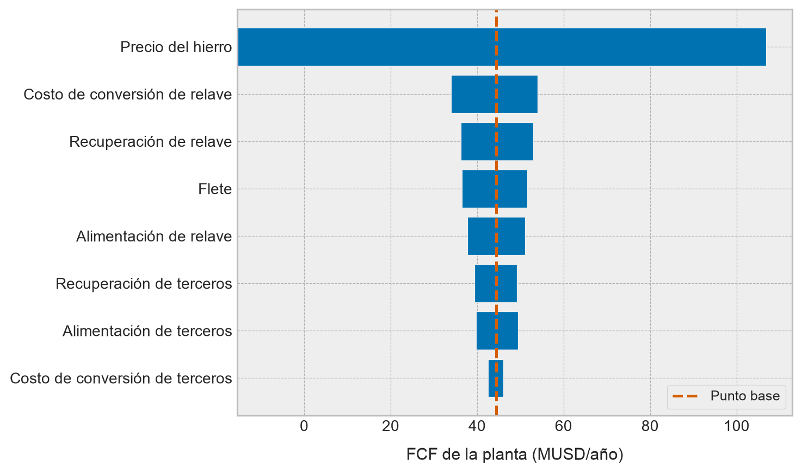
Si el precio domina estas amplitudes, tenemos una señal de exposición comercial. No podemos concluir que las demás variables carezcan de importancia económica ni que el precio explique cierto porcentaje de la varianza. Para eso necesitaríamos un análisis global coherente con la dependencia entre entradas.
Diseño de una negociación bajo incertidumbre (data-driven)
¿Qué cambia el valor y qué cambia el reparto?
Hay una diferencia estructural entre mejorar recuperación y aumentar una tarifa. Una mayor recuperación modifica la masa vendida y sus costos asociados. Su valor depende del margen incremental; incluso puede ser desfavorable si producir más cuesta más de lo que ingresa. Una tarifa privada redistribuye caja entre la planta y quien cobra, pero su efecto agregado depende del tratamiento tributario.
Para verlo, escribamos \(k=B/1000\), que convierte una tarifa en USD/t húmeda a MUSD/año. Mientras el EBIT sea estrictamente positivo y el cambio no cruce el umbral tributario:
\[ \frac{\partial V}{\partial t_T}=-(1-\tau)k \tag{23} \]
Al sustituir en el flujo de cada parte:
\[ \frac{\partial Y_{A}}{\partial t_T}=(1-s)(1-\tau)k \quad; \quad \frac{\partial Y_{B}}{\partial t_T}=-(1-s)(1-\tau)k \tag{24} \]
La suma de ambas derivadas es cero. Para el puerto se intercambian los papeles:
\[ \frac{\partial Y_{A}}{\partial t_P}=-s(1-\tau)k \quad; \quad \frac{\partial Y_{B}}{\partial t_P}=s(1-\tau)k \tag{25} \]
Sin embargo, cuando el EBIT es negativo, la planta no obtiene un ahorro tributario inmediato por pagar más tarifa. En ese régimen \(\partial V/\partial t_T=-k\), mientras el receptor sigue recibiendo \((1-\tau)k\) en nuestro modelo. Por tanto:
\[ \frac{\partial(Y_{A}+Y_{B})}{\partial t_T}=-\tau k \tag{26} \]
La tarifa deja de ser una transferencia pura de valor combinado. El modelo genera una fricción fiscal por gravar al receptor sin reconocer inmediatamente la pérdida de quien paga. Una modelación de pérdidas tributarias acumuladas puede modificar el efecto intertemporal; no se arregla ignorando el máximo de la función de impuesto.
La participación \(s\), por su parte, se aplica después de calcular \(V\):
\[ \frac{\partial Y_A}{\partial s}=V\quad; \quad\frac{\partial Y_B}{\partial s}=-V \tag{27} \]
Esta sí es una transferencia exacta dentro del modelo, incluso cuando \(V<0\). Pero su dirección cambia: Aumentar participación en un flujo negativo incrementa el aporte requerido. Un punto porcentual vale \(0.01V\), no \(0.01\) veces EBITDA ni un monto universal para todos los precios.
NotaEl valor de un punto de participación
Si el flujo repartible de un escenario es \(V=40\) MUSD/año, subir la participación de 50% a 51% aumenta el flujo de la Compañía A en 0.40 MUSD/año. En un escenario con \(V=-30\), ese mismo punto porcentual exige 0.30 MUSD/año adicionales. El derecho sobre la ganancia y la exposición a financiar pérdidas son dos lados de la misma regla.
Podemos verificar ambos regímenes fiscales con una perturbación pequeña de la tarifa de tranque. Este control prueba una propiedad económica y no solamente que la función se ejecute:
# Definimos un tamaño de perturbación pequeño para la tarifa de tranque.
step = 1e-4
# Iteramos sobre diferentes precios para verificar el efecto de la tarifa
# de depositación.
for price_i in [60.0, 100.0]:
inputs = {**base, "price65": price_i}
before = simulate_jv(inputs, base_contract)
after = simulate_jv(
inputs,
{**base_contract, "dam_wmt": base_contract["dam_wmt"] + step},
)
observed = (after["combined"] - before["combined"]) / step
expected_slope = (
0.0 if before["ebit"] > 0 else
-constants["tax_rate"] * before["wet_total"] / 1000
)
np.testing.assert_allclose(
observed, expected_slope, atol=1e-7,
)
print("Efecto agregado de tarifas verificado en ambos regímenes tributarios.")Efecto agregado de tarifas verificado en ambos regímenes tributarios.Las derivadas anteriores son locales. Se calculan manteniendo las demás entradas fijas y sin cruzar un cambio de régimen. No sirven para extrapolar indefinidamente una tarifa ni para ignorar la capacidad de pago de quien la enfrenta. Cuando un incremento mueve el EBIT de positivo a negativo, debemos evaluar la función completa a ambos lados del umbral.
Podemos entender el umbral de la planta despejando el precio que hace \(E_{\mathrm{op}}=0\). Si producción y costos permanecen fijos, necesitamos que los ingresos cubran costos más depreciación. Como el precio de 62% se obtiene restando una diferencia fija \(d=P_{65}-P_{62}\), el umbral es
\[ P_{65}^{\mathrm{EBIT} =0}=\frac{\frac{1000\left( K+D \right)}{B\left( 1-h \right)} +\frac{d}{62} +\frac{f}{1-h} +\pi}{1+\frac{1}{62}} \tag{28} \]
Cada término del numerador está en USD por tonelada seca. El denominador aparece porque aumentar un dólar el precio de 65% también aumenta en \(1/62\) el ajuste de valor en uso. Este umbral no es necesariamente el precio de caja nula: La depreciación no es CAPEX, y las compañías reciben además pagos privados. Podemos tener EBIT positivo y caja insuficiente si la inversión del año es alta.
Ubicación de alternativas y trayectorias en el plano de negociación
Las derivadas explican direcciones de cambio. Ahora las llevaremos al plano que interesa en una mesa de negociación: Flujo recibido por A en el eje horizontal y flujo recibido por B en el vertical. Cada escenario del JV base produce un par de coordenadas. Colorear ese punto por el FCF repartible de la planta permite reconocer si las dos compañías reciben más porque el negocio genera más caja.
La nube de puntos muestra el conjunto de resultados posibles bajo incertidumbre. Podemos llamarla mapa de oportunidades del negocio, pero todavía no es una frontera eficiente de Pareto. En una frontera de este tipo comparamos decisiones y descartamos las dominadas; aquí comparamos futuros de un contrato fijo. No podemos elegir un punto de precio alto como si fuera una cláusula negociable.
Sobre ese mismo plano ubicaremos propuestas evaluadas en el punto operacional determinista. Las líneas grises pasan por el JV base: Arriba y a la derecha, ambas partes mejoran frente a ese punto; abajo y a la izquierda, ambas empeoran; en los otros cuadrantes una mejora tiene una contrapartida para la otra. Esa comparación es puntual. La ubicación de una propuesta entre muchos escenarios favorables no demuestra que tenga una alta probabilidad de mejorar a ambas partes.
El catálogo siguiente conserva propuestas con una sola palanca y un paquete compuesto. La recuperación de 10.5% representa una mejora operacional hipotética. Todavía no incluye una inversión adicional para conseguirla; antes de tratarla como alternativa realizable habría que presupuestar esa inversión y verificar factibilidad metalúrgica:
# Definimos las opciones de negociación.
negotiation_options = {
"0": ("JV base", {}, {}),
"1": ("Tranque a 2.75", {}, {"dam_wmt": 2.75}),
"2": ("Puerto a 4.0", {}, {"port_wmt": 4.0}),
"3": ("Puerto a 8.0", {}, {"port_wmt": 8.0}),
"4": ("Recuperación de relave a 10.5%", {"tailings_recovery": 0.105}, {}),
"5": ("Participación A/B de 60/40", {}, {"share": 0.60}),
"6": ("Paquete alternativo 60/40", {}, alternative_contract),
}
# Simulamos cada opción y calculamos cambios respecto al punto base.
option_rows = []
for option_id, (label_i, input_changes_i, contract_changes_i) in negotiation_options.items():
result = simulate_jv(
{**base, **input_changes_i},
{**base_contract, **contract_changes_i},
)
option_rows.append(
{
"ID": option_id,
"Alternativa": label_i,
"A": result["partner_a"],
"B": result["partner_b"],
"FCF planta": result["fcf"],
"Conjunto": result["combined"],
},
)
# Convertimos la lista de resultados en un DataFrame y calculamos cambios
# respecto al punto base.
option_points = pd.DataFrame(option_rows).set_index("ID")
option_points["Cambio A"] = option_points["A"] - base_result["partner_a"]
option_points["Cambio B"] = option_points["B"] - base_result["partner_b"]La variable option_points contiene coordenadas y cambios económicos, sin dibujar nada todavía. Mostramos la tabla para que las etiquetas breves del gráfico no oculten qué cambia en cada propuesta. Los valores de puerto y tranque están en USD/t de producto húmedo:
option_points[["Alternativa", "A", "B", "FCF planta", "Cambio A", "Cambio B"]]| Alternativa | A | B | FCF planta | Cambio A | Cambio B | |
|---|---|---|---|---|---|---|
| ID | ||||||
| 0 | JV base | 24.457 | 31.210 | 44.412 | 0.000 | 0.000 |
| 1 | Tranque a 2.75 | 25.395 | 30.272 | 42.536 | 0.938 | -0.938 |
| 2 | Puerto a 4.0 | 25.957 | 29.709 | 47.413 | 1.501 | -1.501 |
| 3 | Puerto a 8.0 | 22.956 | 32.710 | 41.411 | -1.501 | 1.501 |
| 4 | Recuperación de relave a 10.5% | 26.922 | 34.209 | 48.985 | 2.465 | 2.999 |
| 5 | Participación A/B de 60/40 | 28.898 | 26.768 | 44.412 | 4.441 | -4.441 |
| 6 | Paquete alternativo 60/40 | 30.849 | 24.818 | 45.162 | 6.392 | -6.392 |
Una trayectoria de negociación evalúa una secuencia ordenada de decisiones, conservando las demás entradas. No representa el paso del tiempo. Dibujaremos la participación de A desde 40% hasta 60% y la recuperación desde 8.5% hasta 10.5%. Los puntos de tarifas también quedarán marcados: Bajo el régimen tributario del punto base se alinean con la dirección de redistribución, aunque cambien la caja repartible de la planta:
# Simulamos trayectorias de participación y recuperación de relave.
share_path = simulate_jv(
base,
{**base_contract, "share": np.linspace(0.40, 0.60, 101)},
)
recovery_path = simulate_jv(
{**base, "tailings_recovery": np.linspace(0.085, 0.105, 101)},
base_contract,
)
# Mostramos una submuestra reproducible de la nube de escenarios.
cloud_positions = np.arange(0, sample_size, 10)
cloud_a = simulated["partner_a"][cloud_positions]
cloud_b = simulated["partner_b"][cloud_positions]
cloud_fcf = simulated["fcf"][cloud_positions]
zoom_a = np.r_[
option_points["A"],
share_path["partner_a"],
recovery_path["partner_a"],
]
zoom_b = np.r_[
option_points["B"],
share_path["partner_b"],
recovery_path["partner_b"],
]
zoom_limits = (
zoom_a.min() - 2,
zoom_a.max() + 2,
zoom_b.min() - 2,
zoom_b.max() + 2,
)Tenemos dos objetos distintos en un sistema de coordenadas común: Una nube de 2000 escenarios seleccionados de la simulación y trayectorias deterministas que pasan por el punto base. La ampliación conserva la misma escala de color que el panel general. Los números identifican las filas de la tabla anterior; las flechas señalan el sentido de aumento de cada palanca:
# Inicializamos nuestra figura.
fig, axes = plt.subplots(nrows=2, ncols=1, figsize=(9, 10))
# Definimos el estilo de la nube de puntos.
cloud_style = {
"c": cloud_fcf,
"cmap": "cividis_r",
"vmin": cloud_fcf.min(),
"vmax": cloud_fcf.max(),
"edgecolors": "none",
}
for ax_i in axes:
scatter = ax_i.scatter(
cloud_a,
cloud_b,
s=12,
alpha=0.65,
**cloud_style,
)
ax_i.axvline(
base_result["partner_a"],
color="#666666",
linestyle="--",
linewidth=1,
)
ax_i.axhline(
base_result["partner_b"],
color="#666666",
linestyle="--",
linewidth=1,
)
ax_i.set_xlabel(
"Flujo recibido por A (MUSD/año)",
fontsize=12,
labelpad=10,
)
ax_i.set_ylabel(
"Flujo recibido por B (MUSD/año)",
fontsize=12,
labelpad=10,
)
axes[0].scatter(
base_result["partner_a"],
base_result["partner_b"],
color="black",
marker="*",
s=100,
label="Punto base determinista",
zorder=4,
)
x0, x1, y0, y1 = zoom_limits
axes[0].plot(
[x0, x1, x1, x0, x0],
[y0, y0, y1, y1, y0],
color="#444444",
linewidth=1.2,
)
axes[0].set_title(
"Escenarios del contrato base y ventana de ampliación",
loc="left",
fontsize=14,
fontweight="bold",
pad=10,
)
axes[0].legend(loc="upper left", fontsize=10)
axes[1].set(xlim=(x0, x1), ylim=(y0, y1))
axes[1].set_title(
"Alternativas y trayectorias desde el punto base",
loc="left",
fontsize=14,
fontweight="bold",
pad=10,
)
for path_i, label_i, color_i, style_i in [
(share_path, "Participación A: 40% a 60%", "#8B4DA8", "--"),
(recovery_path, "Recuperación: 8.5% a 10.5%", "#007C68", "-"),
]:
axes[1].plot(
path_i["partner_a"],
path_i["partner_b"],
color=color_i,
linestyle=style_i,
linewidth=2,
label=label_i,
)
axes[1].annotate(
"",
xy=(path_i["partner_a"][-1], path_i["partner_b"][-1]),
xytext=(path_i["partner_a"][-15], path_i["partner_b"][-15]),
arrowprops={"arrowstyle": "->", "color": color_i, "lw": 2},
)
for option_id, row_i in option_points.iterrows():
axes[1].scatter(
row_i["A"],
row_i["B"],
s=65,
marker="D" if option_id != "0" else "*",
color="black" if option_id == "0" else "#C44E00",
edgecolor="white",
zorder=5,
)
axes[1].annotate(
option_id,
(row_i["A"], row_i["B"]),
xytext=(7, 6),
textcoords="offset points",
fontsize=10,
fontweight="bold",
)
# Ajustamos y finalizamos.
axes[1].legend(loc="upper right", fontsize=10)
fig.subplots_adjust(left=0.13, right=0.97, bottom=0.17, top=0.96, hspace=0.38)
color_axis = fig.add_axes([0.22, 0.055, 0.66, 0.018])
fig.colorbar(
scatter,
cax=color_axis,
orientation="horizontal",
label="FCF de la planta (MUSD/año)",
)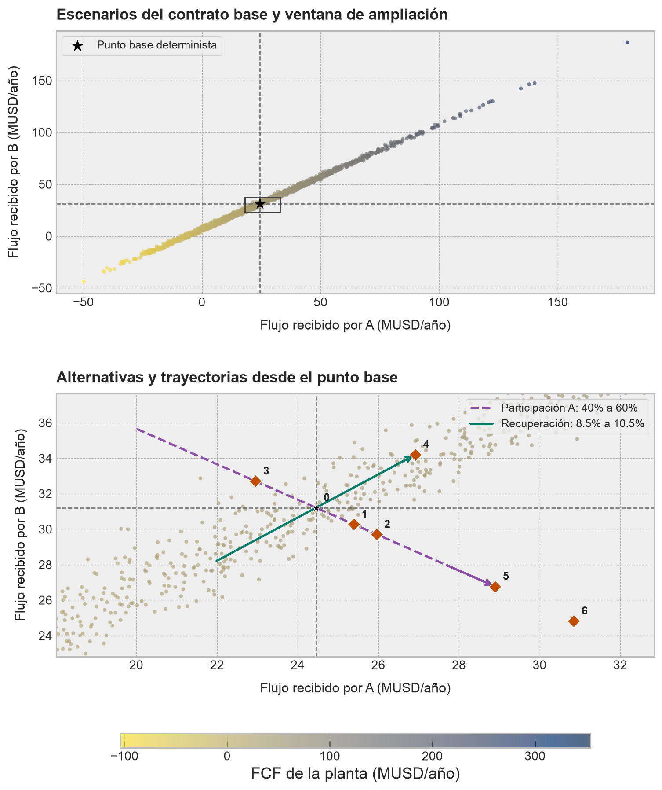
La trayectoria de participación tiene pendiente -1 porque cada dólar adicional asignado a A se resta de B. La suma se conserva incluso si el FCF es negativo, aunque entonces cambia el sentido económico de aumentar participación. En el punto base, las propuestas de tarifas también redistribuyen valor combinado; su dirección se explica por las ecuaciones (24) y (25).
La trayectoria de recuperación avanza hacia mayores flujos de ambas partes bajo los márgenes de este punto de operación. Ese desplazamiento tiene un mecanismo físico: Más producto vendible. No podemos generalizar su dirección a cualquier precio o ignorar la inversión necesaria para conseguirlo. Por su parte, la nube tiene una tendencia positiva porque condiciones de mercado favorables pueden beneficiar simultáneamente a las dos compañías. Esa tendencia no prueba que una propuesta contractual cree valor.
El color de la nube representa FCF de la planta, no suma de flujos de las compañías. La suma recupera los pagos privados después del impuesto supuesto, como muestra la ecuación (12). Dos condiciones con distinto FCF pueden tener igual valor conjunto: Basta con trasladar caja desde la planta hacia una tarifa dentro del régimen tributario de transferencia pura. Los marcadores naranjos identifican propuestas, sin codificar su FCF por color; sus valores están en la tabla.
Hasta aquí ubicamos propuestas puntuales. Para medir su conveniencia bajo incertidumbre volvemos a evaluarlas sobre escenarios emparejados, como hicimos con las modalidades del ranking. Además de sus flujos medios, calcularemos la frecuencia con que ambas partes mejoran en el mismo escenario frente al contrato base. Comparar cada propuesta con la media del base respondería otra pregunta y perdería ese emparejamiento.
Para la propuesta de recuperación trasladamos su distribución beta a una media de 10.5%, conservando el CV y los cuantiles de cada escenario. No sumamos mecánicamente un punto porcentual a todas las realizaciones, porque esa operación podría violar el límite físico de uno. Los cambios de tarifa y participación, en cambio, se aplican como decisiones fijas a toda la muestra.
option_risk_rows = []
recovery_quantiles = (
marginals["tailings_recovery"]
.cdf(training_inputs["tailings_recovery"])
)
for option_id, (label, input_changes, contract_changes) in negotiation_options.items():
inputs = dict(training_inputs)
if "tailings_recovery" in input_changes:
inputs["tailings_recovery"] = beta_from_mean_cv(
input_changes["tailings_recovery"],
0.15
).ppf(np.clip(recovery_quantiles, 1e-12, 1 - 1e-12))
result = simulate_jv(inputs, {**base_contract, **contract_changes})
delta_a = result["partner_a"] - simulated["partner_a"]
delta_b = result["partner_b"] - simulated["partner_b"]
# La tolerancia evita contar redondeo numérico como mejora estricta.
both_improve = (delta_a > 1e-8) & (delta_b > 1e-8)
option_risk_rows.append(
{
"ID": option_id,
"Alternativa": label,
"Media A": result["partner_a"].mean(),
"Media B": result["partner_b"].mean(),
"Cambio medio A": delta_a.mean(),
"Cambio medio B": delta_b.mean(),
"Prob. mejora conjunta": both_improve.mean(),
},
)
option_risk = pd.DataFrame(
option_risk_rows
).set_index("ID").sort_values("Media A", ascending=False)
option_risk.insert(
0,
"Puesto por media A",
np.arange(1, len(option_risk) + 1),
)La tabla mantiene los identificadores del plano y agrega un orden por flujo medio de A. La probabilidad de mejora conjunta está en escala de cero a uno. Para la alternativa base es cero por construcción: Compararla consigo misma no produce una mejora estricta:
option_risk| Puesto por media A | Alternativa | Media A | Media B | Cambio medio A | Cambio medio B | Prob. mejora conjunta | |
|---|---|---|---|---|---|---|---|
| ID | |||||||
| 6 | 1 | Paquete alternativo 60/40 | 30.058 | 24.317 | 6.296 | -6.239 | 0.009 |
| 5 | 2 | Participación A/B de 60/40 | 28.061 | 26.257 | 4.299 | -4.299 | 0.000 |
| 4 | 3 | Recuperación de relave a 10.5% | 26.229 | 33.559 | 2.468 | 3.003 | 0.923 |
| 2 | 4 | Puerto a 4.0 | 25.381 | 29.156 | 1.620 | -1.400 | 0.000 |
| 1 | 5 | Tranque a 2.75 | 24.630 | 29.538 | 0.869 | -1.018 | 0.000 |
| 0 | 6 | JV base | 23.762 | 30.556 | 0.000 | 0.000 | 0.000 |
| 3 | 7 | Puerto a 8.0 | 22.130 | 31.944 | -1.632 | 1.388 | 0.000 |
Una redistribución pura no puede mejorar estrictamente a ambas partes en el mismo escenario, aunque una parte la ubique primera en su ranking. Una mejora operacional puede hacerlo si agrega margen suficiente; aun así, su probabilidad de mejora conjunta no es una probabilidad de rentabilidad positiva. Ambas partes podrían mejorar respecto de una pérdida profunda y continuar con flujo negativo. La grilla que construiremos a continuación agregará restricciones explícitas de pérdida y participación, y permitirá obtener una frontera eficiente de decisiones.
En el experimento, la propuesta de recuperación mejora simultáneamente a ambas partes en aproximadamente 92.3% de los escenarios, antes de incorporar el costo de habilitar esa mejora. El cambio puro a 60/40 lo hace en 0%: Su ganancia para una parte tiene una contrapartida exacta para la otra. El paquete compuesto alcanza cerca de 0.9%, coherente con que sus cambios de tarifas pueden modificar la fricción fiscal en algunos estados. No debemos atribuir esa pequeña creación de valor modelada al porcentaje de participación por sí solo.
Una superficie de respuesta ayuda a observar dos decisiones simultáneas. Usaremos exactamente los mismos escenarios aleatorios para cada combinación de tarifas, aplicando la técnica de números aleatorios comunes que utilizamos en el ranking de modalidades:
port_grid = np.linspace(start=3, stop=9, num=17)
dam_grid = np.linspace(start=1, stop=4, num=17)
mean_surface = np.empty((len(dam_grid), len(port_grid)))
for row_i, dam_i in enumerate(dam_grid):
for col_j, port_j in enumerate(port_grid):
result = simulate_jv(
training_inputs,
{"share": 0.5, "port_wmt": port_j, "dam_wmt": dam_i},
)
mean_surface[row_i, col_j] = np.mean(result["partner_a"])La matriz conserva un orden explícito: Filas para tranque y columnas para puerto. No es un suavizado de una nube dispersa, sino la evaluación de cada combinación sobre una misma muestra:
# Inicializamos la figura.
fig, ax = plt.subplots(figsize=(9, 6))
contours = ax.contourf(
port_grid,
dam_grid,
mean_surface,
levels=12,
cmap="cividis",
)
lines = ax.contour(
port_grid,
dam_grid,
mean_surface,
levels=6,
colors="white",
linewidths=0.7,
)
ax.clabel(lines, fmt="%.1f", fontsize=9)
ax.plot(
base_contract["port_wmt"],
base_contract["dam_wmt"],
"o",
color="#D55E00",
markersize=7,
label="Contrato base",
)
ax.set_xlabel(
"Margen portuario (USD/t húmeda)",
fontsize=12,
labelpad=10,
)
ax.set_ylabel(
"Tarifa de tranque (USD/t húmeda)",
fontsize=12,
labelpad=10,
)
ax.legend(loc="upper right", fontsize=10)
cb = fig.colorbar(
contours,
ax=ax,
orientation="horizontal",
pad=0.20,
)
cb.set_label(
"Flujo medio de la Compañía A (MUSD/año)",
fontsize=12,
)
fig.subplots_adjust(left=0.12, right=0.97, bottom=0.10, top=0.97)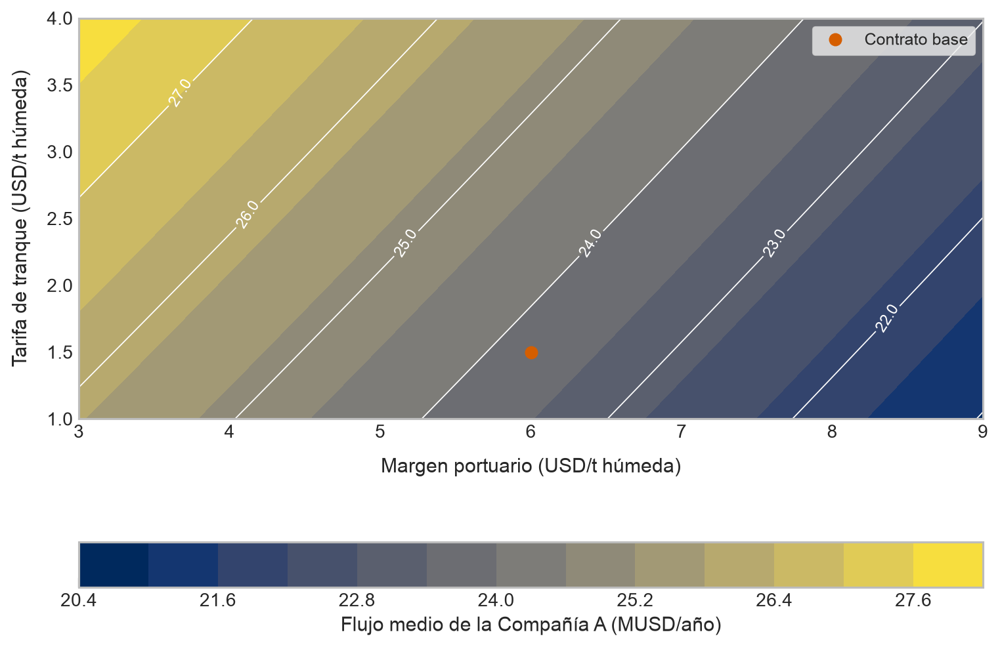
La superficie muestra dónde mejora el resultado de una parte, pero todavía no determina qué combinación aceptaría la otra. Tampoco prueba que la tarifa más alta sea realizable. Esas condiciones deben entrar como restricciones de optimización.
Formulación y resolución de la búsqueda contractual
Sea \(x=(s,t_P,t_T)\) la variable de decisión que representa el contrato a negociar. Su dominio de búsqueda es el conjunto de combinaciones que describen el espacio de negociación. El conjunto factible será el subconjunto que además cumpla las restricciones de riesgo y participación. Para nuestro ejercicio, tomaremos \(0.40\leq s\leq0.60\), \(3\leq t_P\leq9\) y \(1\leq t_T\leq4\). Notemos que estas bandas son condiciones de diseño del experimento, no límites técnicos inevitables.
Buscaremos maximizar el flujo esperado de la Compañía A, sujeto a tres condiciones:
- La Compañía B debe mantener al menos el flujo esperado del JV base.
- Su probabilidad de pérdida puede aumentar como máximo 0.02. Es decir, dos puntos porcentuales.
- La media de la cola inferior de la Compañía A no puede deteriorarse más de 2 MUSD/año frente a la base.
Estas tolerancias son preferencias explícitas para enseñar el procedimiento. No se infieren automáticamente del modelo ni representan una aceptación por parte de las organizaciones. El objetivo y las restricciones pueden cambiar según el mandato negociador.
Denotemos por \(x_{0}\) el contrato base, por \(\mu_{B,0}\) su flujo esperado para la Compañía B, por \(p_{B,0}\) su probabilidad de pérdida y por \(\ell_{A,0}\) su media de cola inferior para la Compañía A. El problema es:
\[ \begin{aligned}\max_{x\in \mathcal{X}} \quad&\mathrm{E} [Y_{A}(x,\xi )]\\ \mathrm{s.a.} :\quad&\mathrm{E} \left[ Y_{B}\left( x,\xi \right) \right] \geq \mu_{B,0}\\ &P\left( Y_{B}\left( x,\xi \right) <0 \right) +0.02\\ &\mathrm{LCVaR}_{0.10} \left( Y_{A}\left( x,\xi \right) \right) \geq \ell_{A,0} -2\end{aligned} \tag{29} \]
La formulación nos obliga a hacer explícita una elección ética y económica del diseño: Estamos optimizando para la Compañía A y usando límites para representar condiciones mínimas de la Compañía B. No estamos afirmando que ambas compañías tengan idénticas preferencias ni que el óptimo de A sea un acuerdo automáticamente aceptable. Una negociación bilateral puede elegir otro punto de la región factible, incorporar otros derechos o usar un objetivo conjunto.
Podríamos, por ejemplo, maximizar una suma ponderada de los flujos esperados. En ese caso los pesos representarían prioridades, pero una suma no protegería por sí sola a la parte con menor peso. Las restricciones de participación siguen siendo necesarias si queremos evitar soluciones que mejoren mucho a la Compañía A a costa de volver inviable a la Compañía B.
El valor de reserva de una parte es lo que puede obtener con su alternativa disponible si no acepta el acuerdo. En el ejercicio usamos el JV base como referencia numérica porque queremos aislar cambios de condiciones con la misma operación. En una negociación real, el valor de reserva podría depender de terminar un contrato, operar por cuenta propia, buscar otro socio o detener una instalación. Debe construirse con el mismo cuidado que la alternativa que pretendemos recomendar.
La segunda condición es una restricción probabilística: Limita la frecuencia de un resultado adverso. La tercera controla su severidad para la otra parte. Dos contratos pueden tener igual probabilidad de pérdida y pérdidas de magnitudes muy diferentes.
Aquí la base de comparación es el JV mejorado 50/50, por lo que aislamos la negociación sobre una operación común. Si la alternativa real es continuar bajo el contrato de referencia, debemos sustituir las reservas de cada parte por los resultados de esa alternativa. Eso exige modelar los escenarios de ambas operaciones sobre incertidumbres comparables y considerar la continuidad de una planta con caja negativa. Cambiar el nombre de la base no basta.
Para resolver el problema sustituimos expectativas y probabilidades por sus estimadores sobre una muestra común. A esto se le suele llamar aproximación por promedio muestral. El objetivo deja de ser una esperanza desconocida y pasa a ser un promedio calculable:
\[ \widehat x_{N} \in \underset{x \in \mathcal{X}_{N}}{\operatorname{arg\,max}} \frac{1}{N}\sum_{j=1}^{N}Y_{A}(x,\xi_{j}) \tag{30} \]
\(\mathcal{X}_{N}\) representa aquí los contratos de la grilla que satisfacen las restricciones estimadas. Recordemos que la notación \(\operatorname{arg\,max}\) devuelve una decisión que maximiza el objetivo, no el valor máximo del flujo. Es importante conservar ese matiz: El resultado que llevamos a la mesa es una combinación de participación y tarifas, acompañada de su evaluación.
La condición probabilística se aproxima con una frecuencia, por lo que cambia en saltos de \(1/N\). La función de impuestos también tiene quiebres. Una búsqueda en grilla evita exigir derivadas suaves a un problema que no las tiene en todas partes. Su precio es la resolución limitada y un costo de cómputo que crece rápidamente al agregar decisiones.
Evaluaremos una grilla finita. Una búsqueda por grillas enumera combinaciones y calcula sus métricas. Es transparente y permite inspeccionar toda la región, aunque no garantiza el óptimo continuo entre los puntos. Con pocas decisiones resulta un primer método útil antes de recurrir a algoritmos más sofisticados. Sin embargo, debemos ser cuidadosos a la hora de definir el número de puntos a evaluar y la geometría de búsqueda, suponiendo uniformidad. Es, literalmente, una aproximación por fuerza bruta:
# Calculamos las métricas base para los socios A y B.
base_metrics_a = summarize(simulated["partner_a"])
base_metrics_b = summarize(simulated["partner_b"])
# Construimos un diccionario con los límites de aceptación para cada
# métrica relevante.
limits = {
"partner_b_mean": base_metrics_b["Media"],
"partner_b_loss": base_metrics_b["Probabilidad de pérdida"] + 0.02,
"partner_a_tail": base_metrics_a["Media peor 10%"] - 2.0,
}Los límites anteriores expresan las condiciones mínimas de aceptación. Definimos ahora una función que calcula exactamente las métricas necesarias para contrastar cada contrato con esos límites:
def evaluate_contract(inputs, contract):
"""
Devuelve las métricas necesarias para decidir si un contrato es admisible.
"""
# Simulamos el contrato con los inputs proporcionados.
result = simulate_jv(inputs, contract)
return {
**contract, "partner_a_mean": np.mean(result["partner_a"]),
"partner_b_mean": np.mean(result["partner_b"]),
"partner_b_loss": np.mean(result["partner_b"] < 0),
"partner_a_tail": lower_tail_mean(result["partner_a"]),
"combined_mean": np.mean(result["combined"]),
}La función de evaluación deja explícitas las métricas de selección. Ahora enumeramos contratos, conservamos los factibles y elegimos el que maximiza el objetivo dentro de la grilla:
# Generamos todos los candidatos posibles dentro de la grilla definida.
# Cada candidato utiliza exactamente la misma muestra de variables exógenas.
candidate_rows = []
for share_i in np.linspace(0.40, 0.60, 9):
for port_j in np.linspace(3.0, 9.0, 13):
for dam_k in np.linspace(1.0, 4.0, 13):
contract_ijk = {"share": share_i, "port_wmt": port_j, "dam_wmt": dam_k}
candidate_rows.append(evaluate_contract(training_inputs, contract_ijk))
# Llevamos todo a formato de DataFrame.
candidates = pd.DataFrame(candidate_rows)
# Marcamos cuáles candidatos son factibles según las restricciones definidas.
# Una fila solo es factible si satisface simultáneamente las tres restricciones.
candidates["feasible"] = (
(candidates["partner_b_mean"] >= limits["partner_b_mean"] - 1e-10)
& (candidates["partner_b_loss"] <= limits["partner_b_loss"] + 1e-10)
& (candidates["partner_a_tail"] >= limits["partner_a_tail"] - 1e-10)
)
feasible = candidates.loc[candidates["feasible"]]
# Filtramos los candidatos factibles.
if feasible.empty:
raise RuntimeError(
"Ningún candidato satisface las restricciones de la muestra."
)
# El objetivo se maximiza después de filtrar las alternativas inadmisibles.
best_row = feasible.loc[feasible["partner_a_mean"].idxmax()]
best_contract = {key: float(best_row[key]) for key in base_contract}
# Mostramos en pantalla un resumen de los candidatos evaluados y los factibles.
print(f"Candidatos evaluados: {len(candidates)}; factibles: {len(feasible)}")
# Y también mostramos la comparación con el contrato base.
pd.DataFrame(
data=[evaluate_contract(training_inputs, base_contract), best_row],
index=["Base", "Seleccionado en entrenamiento"]
).drop(columns="feasible", errors="ignore")Candidatos evaluados: 1521; factibles: 421| share | port_wmt | dam_wmt | partner_a_mean | partner_b_mean | partner_b_loss | partner_a_tail | combined_mean | |
|---|---|---|---|---|---|---|---|---|
| Base | 0.500 | 6.000 | 1.500 | 23.762 | 30.556 | 0.101 | -16.225 | 54.317 |
| Seleccionado en entrenamiento | 0.450 | 3.000 | 1.750 | 23.991 | 30.622 | 0.119 | -11.535 | 54.613 |
Con esta semilla, 421 de los 1521 candidatos satisfacen las restricciones de entrenamiento. El seleccionado tiene participación de 45% para A, margen portuario de 3.0 y tarifa de tranque de 1.75 USD/t húmeda. El flujo esperado de la Compañía A pasa de aproximadamente 23.76 a 23.99 MUSD/año, mientras el de la Compañía B pasa de 30.56 a 30.62 MUSD/año.
Que aparezca 45% en vez de 60% de participación para la Compañía A tiene una explicación: Estamos cambiando simultáneamente tarifas, exposición a pérdidas y fricción fiscal, mientras protegemos la media de la Compañía B. Una participación mayor no maximiza automáticamente la conveniencia de un paquete completo. Tampoco es una recomendación universal de 45/55; el resultado pertenece a estas bandas, restricciones y distribuciones.
El margen portuario seleccionado coincide con el límite inferior de la grilla. Esa observación merece atención: El resultado puede estar condicionado por una frontera que impusimos como supuesto de negociación. Ampliarla solo tendría sentido si existiera una justificación comercial. El algoritmo no autoriza por sí solo a exigir una tarifa menor.
La tabla identifica un candidato concreto, no solo una dirección de mejora. Como el contrato base pertenece a la grilla y satisface los límites por construcción, siempre tenemos una alternativa de respaldo. La tolerancia numérica de \(10^{-10}\) evita rechazar una igualdad por redondeo; no es un margen económico de incumplimiento.
También podemos mirar la frontera de Pareto. Un contrato está dominado si existe otro que mejora o iguala el flujo esperado de ambas partes y mejora estrictamente al menos uno. La frontera reúne los candidatos no dominados en esas dos métricas. No todos sus puntos cumplen necesariamente restricciones de riesgo adicionales; aquí la calcularemos solo dentro de los candidatos factibles:
# Ordenamos los candidatos factibles por el flujo esperado de la Compañía
# B y luego de la Compañía A. Esto nos permite identificar la frontera de
# Pareto de manera eficiente.
ordered = feasible.sort_values(
by=["partner_b_mean", "partner_a_mean"],
ascending=False,
)
# Inicializamos la lista de índices de la frontera y el mejor flujo de
# A encontrado hasta ahora.
frontier_rows = []
best_partner_a_so_far = -np.inf
for index_i, row_i in ordered.iterrows():
if row_i["partner_a_mean"] > best_partner_a_so_far + 1e-10:
frontier_rows.append(index_i)
best_partner_a_so_far = row_i["partner_a_mean"]
# Construimos el DataFrame de la frontera de Pareto a partir de los
# índices seleccionados.
frontier = feasible.loc[frontier_rows].sort_values("partner_b_mean")Ordenar primero por el resultado de la Compañía B nos permite descartar puntos que no mejoran lo ya alcanzado para la Compañía A. Esta frontera describe decisiones alternativas, a diferencia de la nube aleatoria de un contrato fijo que vimos antes. Conservamos A en el eje horizontal y B en el vertical, pero ahora cada coordenada es un flujo esperado calculado sobre todos los escenarios, no la realización de un año ni el resultado determinista de una propuesta:
# Inicializamos nuestra figura.
fig, ax = plt.subplots(figsize=(9, 5))
ax.scatter(
candidates["partner_a_mean"],
candidates["partner_b_mean"],
s=12,
color="#888888",
alpha=0.25,
label="Todos los candidatos",
)
ax.scatter(
feasible["partner_a_mean"],
feasible["partner_b_mean"],
s=16,
color="#0072B2",
alpha=0.65,
label="Factibles en la muestra"
)
ax.plot(
frontier["partner_a_mean"],
frontier["partner_b_mean"],
color="#009E73",
linewidth=2,
label="Frontera de candidatos factibles"
)
ax.scatter(
base_metrics_a["Media"],
base_metrics_b["Media"],
marker="s",
s=70,
color="black",
label="Base",
zorder=4
)
ax.scatter(
best_row["partner_a_mean"],
best_row["partner_b_mean"],
marker="*",
s=180,
color="#D55E00",
label="Seleccionado",
zorder=5
)
# Rotulamos y finalizamos.
ax.set_xlabel(
"Flujo esperado Compañía A (MUSD/año)",
fontsize=12,
labelpad=10,
)
ax.set_ylabel(
"Flujo esperado Compañía B (MUSD/año)",
fontsize=12,
labelpad=10,
)
ax.legend(fontsize=10, frameon=True, loc="best")
fig.subplots_adjust(left=0.13, right=0.98, bottom=0.15, top=0.97)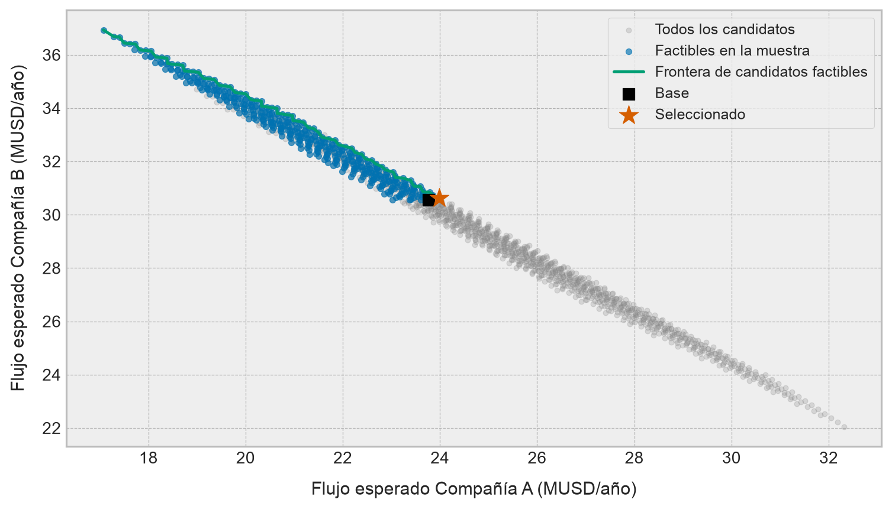
Si aparecen mejoras simultáneas pequeñas al cambiar tarifas, debemos interpretarlas a la luz del régimen fiscal: Reducir transferencias gravadas cuando la planta está en pérdida puede elevar el valor combinado del modelo. No significa que una tarifa cree producción. Una mejora de recuperación o de eficiencia tiene otro mecanismo y debe evaluarse con su costo de implementación.
Validación fuera de muestra
Cuando examinamos muchos contratos sobre una muestra y escogemos el mejor, podemos seleccionar uno favorecido por el ruido de esa muestra. Es el equivalente de ajustar demasiado una decisión a los escenarios disponibles. Por eso reservaremos una segunda muestra independiente para evaluar la alternativa ya elegida. Esto es similar a lo que ocurre cuando entrenamos modelos de machine learning y luego evaluamos su desempeño en un conjunto de prueba, a fin de evitar tanto overfitting como data leakage.
Dentro de esta segunda muestra seguiremos usando números aleatorios comunes: Contrato base y candidato se enfrentan al mismo escenario \(\xi_{j}\). La diferencia pareada es \(D_j=Y_{A}(x,\xi_j)-Y_A(x_0,\xi_j)\). Su error estándar es \(s_D/\sqrt{N}\), no la suma de los errores de dos muestras independientes. Si los resultados están muy correlacionados, el emparejamiento permite estimar diferencias pequeñas con más precisión.
# Construimos la muestra de validación y simulamos los contratos sobre ella.
validation_inputs = sample_inputs(40000, seed=42)
validation_base = simulate_jv(validation_inputs, base_contract)
validation_best = simulate_jv(validation_inputs, best_contract)
# Llevamos todo a formato de DataFrame.
validation_table = pd.DataFrame({
"Base A": summarize(validation_base["partner_a"]),
"Candidato A": summarize(validation_best["partner_a"]),
"Base Compañía B": summarize(validation_base["partner_b"]),
"Candidato Compañía B": summarize(validation_best["partner_b"]),
}).T
# Y mostramos la tabla en pantalla.
validation_table| Media | P10 | P90 | Probabilidad de pérdida | Media peor 10% | Error estándar de la media | |
|---|---|---|---|---|---|---|
| Base A | 23.718 | -6.691 | 57.590 | 0.165 | -16.012 | 0.132 |
| Candidato A | 23.955 | -3.081 | 54.463 | 0.130 | -11.349 | 0.119 |
| Base Compañía B | 30.510 | -0.179 | 64.805 | 0.101 | -9.320 | 0.134 |
| Candidato Compañía B | 30.578 | -2.525 | 67.963 | 0.120 | -12.593 | 0.146 |
Esta tabla debe leerse junto con las restricciones. Una media alta por sí sola no valida el contrato. Calcularemos márgenes relativos a la base en la nueva muestra: Un margen no negativo satisface la condición estimada. Para la probabilidad de pérdida conservamos los dos puntos porcentuales de tolerancia, y para la cola los 2 MUSD/año:
# Generamos una serie con los márgenes relativos a la base.
validation_margins = pd.Series(
{
"Media Compañía B sobre base (MUSD/año)": np.mean(
validation_best["partner_b"] - validation_base["partner_b"]
),
"Holgura de probabilidad Compañía B": np.mean(
validation_base["partner_b"] < 0
) + 0.02 - np.mean(validation_best["partner_b"] < 0),
"Holgura de cola A (MUSD/año)": lower_tail_mean(
validation_best["partner_a"]
) - lower_tail_mean(validation_base["partner_a"]) + 2.0,
},
)
# Mostramos en pantalla estos márgenes.
print(validation_margins.to_string())
# Iteramos sobre las métricas de cada compañía para calcular la mejora
# y su intervalo de confianza.
pairing = [("partner_a", "Compañía A"), ("partner_b", "Compañía B")]
for metric_i, label_i in pairing:
# Calculamos las diferencias pareadas entre el contrato candidato y el base.
differences_i = validation_best[metric_i] - validation_base[metric_i]
# Calculamos la media y el error estándar de las diferencias pareadas.
mean_i = differences_i.mean()
error_i = differences_i.std(ddof=1) / np.sqrt(len(differences_i))
# Mostramos en pantalla la mejora y su intervalo de confianza.
print(
f"Mejora {label_i}: {mean_i:.4f}; IC aproximado 95% "
f"[{mean_i - 1.96 * error_i:.4f}, {mean_i + 1.96 * error_i:.4f}] MUSD/año"
)
# Y también mostramos si se cumple puntualmente la condición de margen para
# todos los escenarios.
print(
"Cumplimiento puntual fuera de muestra:",
bool((validation_margins >= 0).all())
)Media Compañía B sobre base (MUSD/año) 0.067
Holgura de probabilidad Compañía B 0.002
Holgura de cola A (MUSD/año) 6.662
Mejora Compañía A: 0.2363; IC aproximado 95% [0.2092, 0.2635] MUSD/año
Mejora Compañía B: 0.0672; IC aproximado 95% [0.0436, 0.0908] MUSD/año
Cumplimiento puntual fuera de muestra: TrueEn la muestra independiente, la mejora estimada de la Compañía A es aproximadamente 0.223 MUSD/año, con intervalo de 0.196 a 0.249. Para la Compañía B, la mejora es aproximadamente 0.073 MUSD/año y su intervalo va de 0.049 a 0.096. Las diferencias medias son positivas bajo este experimento, y el candidato cumple puntualmente las tres condiciones.
Sin embargo, la probabilidad de pérdida de la Compañía B aumenta de 10.17% a 11.96%, cerca del máximo permitido de 12.17%. Su media del peor 10% empeora de aproximadamente -9.50 a -12.79 MUSD/año. La restricción controlaba la frecuencia de pérdidas de la Compañía B, no su severidad. Preservar su media no elimina ese deterioro de cola: Si importa al mandato negociador, debe agregarse como restricción antes de volver a elegir.
Para la Compañía A, la media de la cola inferior mejora de aproximadamente -16.19 a -11.51 MUSD/año. El candidato reduce parte de su exposición bajista a cambio de una participación menor en escenarios favorables. Esta lectura conjunta explica mejor la decisión que mencionar únicamente el incremento de la media.
El intervalo es una aproximación para la media de diferencias bajo el modelo y el muestreo independiente. No incorpora incertidumbre sobre las distribuciones elegidas. Si el intervalo para la mejora de la Compañía B cruza cero, la muestra no demuestra que se preserve su media con ese nivel de precisión, aunque la estimación puntual sea positiva.
Una restricción casi activa exige margen de seguridad. En un diseño final conviene exigir holguras durante la selección y estimar incertidumbre también para la probabilidad de pérdida y la media de cola, por ejemplo mediante remuestreo de escenarios pareados. Si la validación falla, no debemos seguir mirando muestras hasta encontrar una favorable: Se revisa el diseño con una muestra de desarrollo y se reserva otra prueba independiente para la nueva decisión.
La ventaja de emparejar escenarios puede expresarse con una identidad de varianza. Si \(Y^{(1)}\) e \(Y^{(0)}\) son los flujos de candidato y base bajo el mismo futuro, entonces:
\[ \operatorname{Var}(Y^{(1)}-Y^{(0)})= \operatorname{Var}(Y^{(1)})+\operatorname{Var}(Y^{(0)}) -2\operatorname{Cov}(Y^{(1)},Y^{(0)}) \tag{31} \]
Recordemos que la covarianza mide si las desviaciones de ambas variables tienden a moverse juntas. En este negocio, un buen mercado suele beneficiar a ambos contratos, de modo que la covarianza puede ser grande y positiva. Al restar los resultados emparejados, gran parte del ruido común desaparece. Si generáramos futuros distintos para cada contrato, perderíamos esa ventaja.
La técnica no fuerza que el candidato mejore. Precisamente permite observar una diferencia pequeña sin confundirla con la dispersión enorme del mercado. Tampoco garantiza reducir varianza en cualquier problema: Su efectividad depende del signo y magnitud de esa covarianza.
La simulación independiente valida la evaluación del candidato, pero no prueba que siga siendo el mejor de la grilla ni que la grilla contenga el mejor contrato continuo. Para estudiar la resolución podemos reducir el paso alrededor de los candidatos prometedores y comprobar si las mejoras adicionales son relevantes frente al error derivado de la simulación de Monte Carlo.
Prueba de los supuestos de independencia
Hasta ahora hemos supuesto independencia estadística entre las entradas. En una operación real puede haber costos que aumentan juntos y precios y fletes expuestos al mismo ciclo. Las correlaciones importan porque dos condiciones adversas simultáneas pueden aumentar la severidad de las pérdidas.
Una forma de explorar esa fragilidad es una cópula Gaussiana. Construimos variables normales relacionadas, las convertimos a probabilidades acumuladas y aplicamos el cuantil de cada marginal. Así conservamos las distribuciones individuales mientras modificamos su dependencia. La correlación que fijamos corresponde a las normales intermedias; no coincide necesariamente con la correlación lineal final de precios y costos.
Para generar normales relacionadas usaremos la factorización de Cholesky: Si una matriz simétrica \(R\) es definida positiva, existe una matriz triangular \(A\) tal que \(R=AA^\top\). Con filas normales independientes \(Z\) de dimensión \(n\), el producto \(ZA^\top\) tiene matriz de covarianza \(R\). Aquí \(n\) es el número de entradas inciertas, por lo que \(R\) y \(A\) son matrices de dimensión \(n\times n\).
No estimaremos correlaciones con una muestra insuficiente ni las presentaremos como hechos. Haremos una prueba de tensión con correlación latente 0.6 entre precio y flete y 0.8 entre los dos costos de conversión. El propósito es observar si la conclusión depende demasiado de la independencia:
def sample_correlated(size, seed):
"""
Conserva las marginales y modifica su dependencia mediante normales latentes.
"""
# Definimos los nombres de las variables y la matriz de correlación inicial
# como identidad.
names = list(marginals)
correlation = np.eye(len(names))
# Establecemos las correlaciones deseadas entre pares específicos de variables.
for first, second, rho in [
("price65", "freight_wmt", 0.6),
("tailings_cost", "third_party_cost", 0.8)
]:
i, j = names.index(first), names.index(second)
correlation[i, j] = correlation[j, i] = rho
# La factorización también verifica que la matriz de dependencia sea admisible.
factor = np.linalg.cholesky(correlation)
# Generamos las variables latentes correlacionadas y las convertimos a uniformes.
rng = np.random.default_rng(seed)
latent = rng.normal(size=(size, len(names))) @ factor.T
uniforms = stats.norm.cdf(latent)
inputs = dict(base)
# Transformamos las uniformes en cuantiles de las distribuciones marginales
# correspondientes.
for col_j, name_j in enumerate(names):
probability = uniforms[:, col_j]
if name_j == "price65":
lower = marginals[name_j].cdf(20.0)
probability = lower + (1 - lower) * probability
inputs[name_j] = marginals[name_j].ppf(
np.clip(probability, 1e-12, 1 - 1e-12)
)
return inputsLa función de tensión cambia la dependencia entre entradas. La aplicamos con una nueva semilla y evaluamos los dos contratos sin volver a optimizar sus condiciones:
# Generamos las entradas bajo la nueva dependencia y evaluamos los contratos.
stress_inputs = sample_correlated(40000, seed=20261118)
stress_base = simulate_jv(stress_inputs, base_contract)
stress_best = simulate_jv(stress_inputs, best_contract)
# Mostramos en pantalla un resumen de los resultados.
pd.DataFrame(
{
label: summarize(result[metric])
for label, result, metric in [
("Base A", stress_base, "partner_a"),
("Candidato A", stress_best, "partner_a"),
("Base Compañía B", stress_base, "partner_b"),
("Candidato Compañía B", stress_best, "partner_b"),
]
}
).T| Media | P10 | P90 | Probabilidad de pérdida | Media peor 10% | Error estándar de la media | |
|---|---|---|---|---|---|---|
| Base A | 23.862 | -4.370 | 55.271 | 0.144 | -12.827 | 0.123 |
| Candidato A | 24.070 | -0.989 | 52.440 | 0.110 | -8.489 | 0.111 |
| Base Compañía B | 30.653 | 2.177 | 62.622 | 0.082 | -6.148 | 0.125 |
| Candidato Compañía B | 30.719 | 0.076 | 65.480 | 0.100 | -9.098 | 0.136 |
Precio y flete positivamente relacionados pueden compensarse parcialmente en el precio FOB, porque uno suma y el otro resta. En cambio, costos de ambas corrientes aumentando juntos pueden agravar una cola adversa. No existe una regla universal que diga que agregar correlación siempre empeora el negocio.
Mantenemos fijo el candidato seleccionado: Esta tabla es una prueba de robustez, no una nueva optimización. Si cambian materialmente sus ventajas o sus holguras, la dependencia merece incorporarse al diseño antes de tomar una decisión. También conviene tensionar la media del precio, la dispersión de costos, el cumplimiento de las mejoras y las restricciones físicas de capacidad.
Construcción del valor del contrato completo
¿Qué podemos descontar y qué debemos simular?
Un año representativo ayuda a entender los mecanismos, pero una negociación de largo plazo requiere un calendario. El valor presente descuenta los flujos futuros para expresarlos en una misma fecha. Si \(i\) es una tasa de descuento anual y \(Y_{A,t}\) el flujo al final del año \(t\):
\[ \operatorname{VP}_{A}=\sum_{t=1}^{H}\frac{Y_{A,t}}{(1+i)^t} \tag{32} \]
Para obtener un valor actual neto hay que incluir además los desembolsos iniciales atribuibles a esa parte. La tasa y el flujo deben corresponder a la misma perspectiva, moneda y convención real o nominal. No se debe descontar sin revisión un flujo después de deuda con una tasa escogida para un flujo de activos antes de financiamiento.
Si una mejora contractual entrega el mismo incremento \(\triangle Y_{A}\) todos los años, sin transición ni crecimiento, podemos factorizarlo:
\[ \triangle\operatorname{VP}_{A}=\triangle Y_{A}\frac{1-(1+i)^{-H}}{i} \tag{33} \]
El factor multiplica una anualidad, no reproduce por sí solo la vida del contrato. Para \(i=0\), el límite es \(H\). Una diferencia esperada anual también puede multiplicarse por ese factor para calcular valor presente esperado si los flujos esperados son constantes y la tasa es determinista. La distribución de ese valor presente requiere conocer la dependencia entre años:
def annuity_factor(rate, years):
"""Calcula el factor de valor presente de pagos al cierre de cada año."""
return years if rate == 0 else (1 - (1 + rate) ** (-years)) / rateCon el factor de anualidad definido, procesamos la diferencia media obtenida fuera de muestra y la expresamos en valor presente bajo un horizonte ilustrativo:
# Calculamos el incremento anual esperado y su valor presente ilustrativo
increment = np.mean(validation_best["partner_a"] - validation_base["partner_a"])
# Mostramos en pantalla los resultados calculados.
print(f"Incremento anual esperado: {increment:.3f} MUSD")
print(
f"VP de anualidad ilustrativa, 20 años al 8%: "
f"{increment * annuity_factor(0.08, 20):.3f} MUSD"
)Incremento anual esperado: 0.236 MUSD
VP de anualidad ilustrativa, 20 años al 8%: 2.320 MUSDEse valor es una aproximación de anualidad, no la valoración completa de la asociación. Para incorporar la transición debemos modelar, al menos, producción anual, CAPEX, capital de trabajo y las transferencias financieras acordadas.
El calendario de caja, la deuda y la continuidad
El capital de trabajo neto representa recursos inmovilizados en la operación. Una aproximación basada en días de cobro y pago es:
\[ W_{t}=R_{t}\frac{d_{c}}{365} -K_{t}\frac{d_{p}}{365} \quad ;\quad \triangle W_{t}=W_{t}-W_{t-1} \tag{34} \]
Si la operación crece y aumentan las cuentas por cobrar, parte de la utilidad todavía no está disponible como caja. Se necesita un \(W_0\) inicial: No podemos asignar automáticamente variación cero al primer año. Esta aproximación no incluye inventarios explícitos y debe usar una base de costos compatible con los pagos que realmente generan cuentas por pagar.
La siguiente función convierte series anuales de ingresos y costos en caja. Los arreglos tienen una posición por año y la resta se aplica a años consecutivos. El primer capital de trabajo se compara con la condición inicial recibida como argumento:
def annual_cash_flow(
revenue,
cost,
capex,
opening_nwc,
collection_days=60,
payment_days=60,
):
"""
Calcula una trayectoria de caja incluyendo la condición inicial de capital
de trabajo.
"""
# Calculamos ingresos, costos y CAPEX como arreglos compatibles.
revenue, cost, capex = np.broadcast_arrays(revenue, cost, capex)
# Verificamos que los arreglos sean unidimensionales.
if revenue.ndim != 1:
raise ValueError("Se espera una trayectoria anual unidimensional.")
# Calculamos el capital de trabajo neto (NWC) como diferencia entre cuentas
# por cobrar y cuentas por pagar.
nwc = revenue * collection_days / 365 - cost * payment_days / 365
# La primera diferencia usa la situación inicial, no una variación asumida nula.
delta_nwc = np.diff(np.r_[opening_nwc, nwc])
cash = cash_waterfall(revenue, cost, capex=capex, delta_nwc=delta_nwc)
return pd.DataFrame(
{
"revenue": revenue,
"cost": cost,
"capex": capex,
"nwc": nwc,
"delta_nwc": delta_nwc,
**cash,
},
)Esta función mantiene la depreciación constante del modelo principal. Una valoración completa debe reemplazarla por un calendario de activos y modelar cierre, recuperación de capital de trabajo y valor residual cuando correspondan. Detener la producción tampoco elimina automáticamente todos los costos fijos.
Para ilustrar exclusivamente el efecto de capital de trabajo mantendremos el EBITDA base durante cinco años, partiremos de \(W_0=0\) y usaremos el mismo CAPEX. Así aislamos la diferencia entre utilidad operacional y caja del primer año:
# Definimos la proyección anual con capital de trabajo inicial cero.
annual_example = annual_cash_flow(
np.full(5, base_result["revenue"]), np.full(5, base_result["cost"]),
np.full(5, constants["capex_m"]), opening_nwc=0.0,
)
# Indexamos los años de 1 a 5.
annual_example.index = pd.Index(np.arange(1, 6), name="Año")
# Y mostramos en pantalla las columnas relevantes.
annual_example[["ebitda", "nwc", "delta_nwc", "fcf"]]| ebitda | nwc | delta_nwc | fcf | |
|---|---|---|---|---|
| Año | ||||
| 1 | 62.549 | 10.282 | 10.282 | 34.130 |
| 2 | 62.549 | 10.282 | 0.000 | 44.412 |
| 3 | 62.549 | 10.282 | 0.000 | 44.412 |
| 4 | 62.549 | 10.282 | 0.000 | 44.412 |
| 5 | 62.549 | 10.282 | 0.000 | 44.412 |
El EBITDA se mantiene, pero la caja inicial disminuye por financiar el capital de trabajo. En los años siguientes el nivel de capital de trabajo sigue existiendo; simplemente deja de crecer. Confundir nivel con variación haría descontar el mismo monto todos los años.
Reconstrucción y conciliación de los veinte años de la planilla original
Volvamos ahora a la proyección del archivo. Cada columna anual debe utilizar su propia alimentación, recuperación, precio, inversión y condiciones de pago. No corresponde multiplicar el resultado de régimen por veinte ni sustituir la trayectoria por su promedio: El impuesto sobre resultados positivos y la financiación del capital de trabajo dependen de lo que ocurre en cada período.
Construiremos una función que recibe una tabla con un año por fila y un supuesto por columna. A diferencia del motor en régimen, todos sus parámetros se toman de esa tabla. Esto permite cambiar, por ejemplo, la humedad de un año sin modificar un diccionario global. Mantendremos visibles los mismos pasos ya explicados: Masa, precio, costos, resultado, capital de trabajo y reparto:
def project_contract(annual_inputs):
"""
Reconstruye la trayectoria del JV a partir de supuestos ordenados
por año.
"""
# Inicializamos la tabla de resultados.
x = annual_inputs
result = pd.DataFrame(index=x.index)
# Realizamos el balance físico y conversión de precio húmedo a seco.
result["wet_tailings"] = (
x["utilization"] * x["tailings_kt"] * x["tailings_recovery"]
)
result["wet_third_party"] = (
x["third_party_kt"] * x["third_party_recovery"]
)
result["wet_total"] = (
result["wet_tailings"] + result["wet_third_party"]
)
result["dry_total"] = result["wet_total"] * (1 - x["moisture"])
result["fob"] = (
x["price65"]
+ (x["price65"]
- x["price_spread"])
/ 62
- x["freight_wmt"]
/ (1 - x["moisture"])
- x["quality_penalty"]
)
result["revenue"] = result["dry_total"] * result["fob"] / 1000
# Calculamos los costos operativos totales incluyendo portuarios,
# depositación y otros costos variables.
result["port"] = x["port_wmt"] * result["wet_total"] / 1000
result["dam"] = x["dam_wmt"] * result["wet_total"] / 1000
result["cost"] = (
x["sga_m"]
+ result["port"]
+ result["dam"]
+ (
x["tailings_cost"]
* result["wet_tailings"]
+ x["third_party_cost"]
* result["wet_third_party"]
+ x["purchase_wmt"]
* x["third_party_kt"]
) / 1000
)
result["ebitda"] = result["revenue"] - result["cost"]
result["ebit"] = result["ebitda"] - x["depreciation_m"]
result["tax"] = np.maximum(0, result["ebit"] * x["tax_rate"])
result["capex"] = x["capex_m"]
# Calculamos el capital de trabajo y su variación.
result["nwc"] = (
result["revenue"]
* x["collection_days"]
/ 365
- result["cost"]
* x["payment_days"]
/ 365
)
result["delta_nwc"] = result["nwc"].diff()
result.loc[result.index[0], "delta_nwc"] = (
result["nwc"].iloc[0] - x["opening_nwc"].iloc[0]
)
# Calculamos el flujo de caja libre y su distribución entre las
# partes.
result["fcf"] = (
result["ebitda"]
- result["tax"]
- result["capex"]
- result["delta_nwc"]
)
result["A"] = (
x["share"]
* result["fcf"]
+ (1 - x["tax_rate"])
* result["dam"]
)
result["B"] = (
(1 - x["share"]) * result["fcf"]
+ (1 - x["tax_rate"]) * result["port"]
)
result["combined"] = result["A"] + result["B"]
# Tasas spot reales para cada vencimiento, con flujos al cierre de cada año.
result["discount_factor"] = (
(1 + x["discount_rate"])
** (-x.index.to_numpy(dtype=float))
)
result["pv_A"] = result["A"] * result["discount_factor"]
result["pv_B"] = result["B"] * result["discount_factor"]
return resultLa función devuelve una tabla con componentes de caja por período. El método diff() calcula la diferencia entre saldos consecutivos; la primera fila requiere un tratamiento explícito porque todavía no tiene un año anterior dentro de la tabla. El capital de trabajo inicial viene de los supuestos del primer año.
La tasa de descuento de la planilla es 8% real para todos los vencimientos. Si se modifica por columna, la fórmula la interpreta como tasa anual equivalente desde el inicio hasta ese vencimiento, también llamada tasa spot. No representa una sucesión de tasas de un año que deban acumularse entre sí. Mantener clara esa interpretación evita mezclar dos curvas de descuento distintas.
Preparamos los datos y ejecutamos la proyección:
# Definimos los años de proyección y preparamos los datos anuales.
projection_years = list(range(1, 21))
annual_inputs = workbook_inputs.loc[:, projection_years].T
annual_inputs.index.name = "Año"
annual_projection = project_contract(annual_inputs)
annual_expected = (
workbook_outputs
.loc[annual_projection.columns, projection_years]
.T
)
annual_difference = annual_projection - annual_expected
# Comprobamos que la proyección anual coincide con los resultados esperados.
np.testing.assert_allclose(
annual_projection,
annual_expected,
atol=1e-8,
rtol=0,
)
# Controles de conservación guardados en la planilla, revisados para todos los años.
np.testing.assert_allclose(
workbook_outputs.loc[["check_mass", "check_allocation"], projection_years],
0,
atol=1e-8,
rtol=0,
)La comprobación abarca todos los años y todas las columnas devueltas por project_contract(), incluyendo la financiación inicial, las variaciones posteriores y los valores presentes. Las diferencias de balance de la planilla complementan esa comparación; no sustituyen el cálculo independiente en Python.
Presentamos los cinco primeros años y los totales descontados por compañía en bloques de resultados. Los valores presentes se suman porque ya están expresados a la misma fecha; los saldos de capital de trabajo no deben sumarse como si fueran flujos.
annual_projection.loc[1:5, ["revenue", "ebitda", "capex", "delta_nwc", "fcf", "A", "B"]]| revenue | ebitda | capex | delta_nwc | fcf | A | B | |
|---|---|---|---|---|---|---|---|
| Año | |||||||
| 1 | 148.012 | 47.753 | 6.000 | 7.850 | 25.465 | 14.824 | 21.101 |
| 2 | 158.261 | 54.592 | 6.000 | 1.124 | 37.319 | 20.824 | 27.318 |
| 3 | 170.772 | 63.683 | 6.000 | 1.494 | 43.767 | 24.124 | 30.847 |
| 4 | 182.003 | 72.610 | 6.000 | 1.468 | 50.490 | 27.533 | 34.398 |
| 5 | 172.463 | 62.954 | 11.000 | -1.587 | 41.303 | 22.934 | 29.782 |
El primer año genera 47.75 MUSD de EBITDA, pero requiere aproximadamente 7.85 MUSD para financiar capital de trabajo. Después de impuestos e inversión, quedan 25.46 MUSD de caja repartible. En el año 5 aparece una inversión de sostenimiento mayor. Estos mecanismos explican por qué una trayectoria puede tener una caja muy distinta a veinte repeticiones del año en régimen:
annual_projection[["pv_A", "pv_B"]].sum().rename("Valor presente del horizonte (MUSD)")pv_A 215.010
pv_B 278.854
Name: Valor presente del horizonte (MUSD), dtype: float64Los flujos del horizonte tienen valores presentes de aproximadamente 215.01 MUSD para la Compañía A y 278.85 MUSD para la Compañía B. Estos montos excluyen adquisición inicial, deuda y valor terminal; tampoco se libera capital de trabajo al final, porque suponemos que la operación continúa. Por lo tanto, no representan el valor de empresa ni una rentabilidad sobre el capital invertido. Representan exactamente la suma descontada de los flujos modelados durante veinte años.
La siguiente figura permite reconocer la inversión periódica y el efecto del capital de trabajo sin mezclar un saldo con su variación. Cada panel conserva las mismas posiciones anuales:
# Iniciamos nuestra figura.
fig, axes = plt.subplots(
nrows=2,
ncols=1,
figsize=(9, 7),
sharex=True,
)
# Primer panel.
axes[0].plot(
projection_years,
annual_projection["ebitda"],
label="EBITDA",
color="#2563A6",
)
axes[0].plot(
projection_years,
annual_projection["fcf"],
label="Caja repartible",
color="#A63D40",
)
# Etiquetado del primer panel.
axes[0].set_title(
"Resultado operacional y caja",
fontsize=13,
fontweight="bold",
loc="left",
pad=10,
)
axes[0].set_ylabel(
"MUSD/año",
fontsize=12,
labelpad=10,
)
axes[0].set_ylim(20, 82)
axes[0].legend(loc="upper right", ncol=2, fontsize=9)
# Segundo panel.
axes[1].bar(
np.array(projection_years) - 0.18, annual_projection["capex"],
width=0.36,
label="CAPEX",
color="#2563A6",
)
axes[1].bar(
np.array(projection_years) + 0.18, annual_projection["delta_nwc"],
width=0.36,
label="Variación de capital de trabajo",
color="#B06D20",
)
axes[1].axhline(0, color="black", linewidth=0.7)
# Etiquetado del segundo panel.
axes[1].set_title(
"Usos de caja adicionales",
fontsize=13,
fontweight="bold",
loc="left",
pad=10,
)
axes[1].set_ylabel(
"MUSD/año",
fontsize=12,
labelpad=10,
)
axes[1].set_xlabel(
"Año del contrato",
fontsize=12,
labelpad=10,
)
axes[1].set_xticks([1, 5, 10, 15, 20])
axes[1].set_ylim(-4, 15)
axes[1].legend(loc="upper left", ncol=2, fontsize=10)
fig.subplots_adjust(hspace=0.28)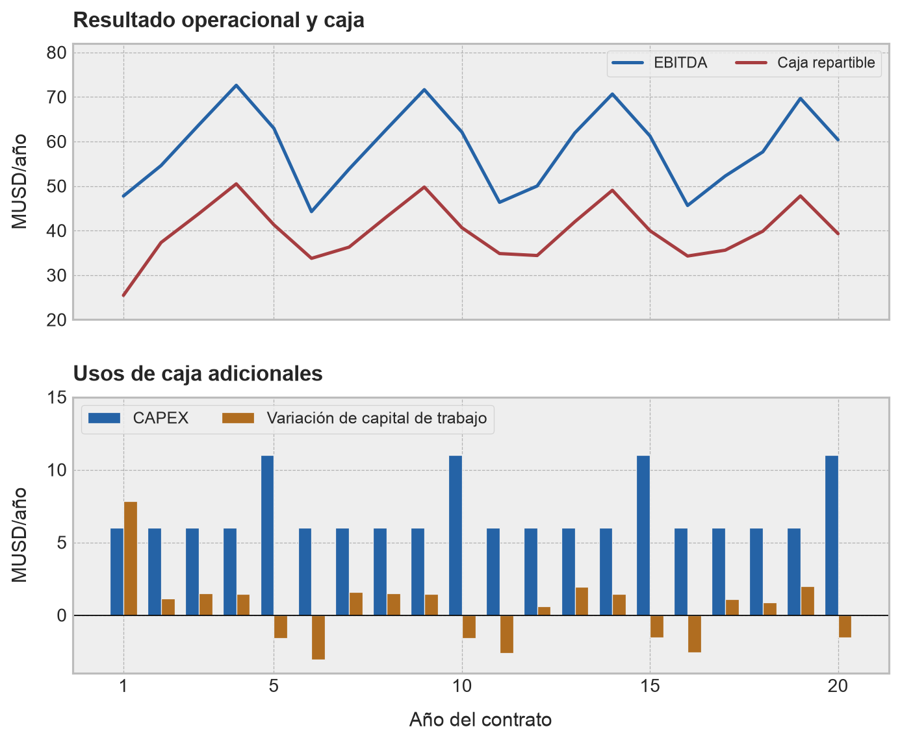
Una variación negativa de capital de trabajo devuelve caja: La operación necesita menos recursos inmovilizados que el año anterior. Eso no convierte una caída de ingresos en una mejora del negocio. Debemos interpretar esa liberación junto con el margen operacional y las necesidades futuras de inversión.
Extensión del modelo a financiamiento y continuidad
Si una parte financia a la otra durante la transición, necesitamos además un calendario de deuda. Para un saldo \(B_{t-1}^{d}\), tasa contractual \(i_d\) y servicio máximo \(a_t\), una regla ilustrativa de amortización es:
\[ \begin{array}{l}I_{t}^{d}=i_{d}B_{t-1}^{d}\\ A_{t}^{d}=\min \left( B_{t-1}^{d},\max (0,a_{t}-I_{t}^{d}) \right)\\ B_{t}^{d}=B_{t-1}^{d}-A_{t}^{d}\end{array} \tag{35} \]
Esta regla supone que el interés se paga íntegramente; si el máximo no alcanza para cubrirlo, debe definirse una regla de incumplimiento o capitalización. El principal pagado es una transferencia financiera, no un costo operacional. Si el préstamo es entre las dos partes, el pago de una debe aparecer como cobro de la otra, con el tratamiento fiscal correspondiente para intereses. Si es deuda externa, la caja sale del conjunto. Esta distinción impide descontar el mismo financiamiento dos veces.
La continuidad operacional agrega otra decisión. Si la planta enfrenta un precio bajo, podría operar a pérdida durante algunos meses, reducir alimentación, entrar en mantenimiento o detenerse. Cada respuesta tiene costos, plazos y restricciones. Una regla del tipo «si la caja es negativa, reemplazarla por cero» omite esos mecanismos y puede sobrevalorar una protección contractual.
Una forma progresiva de ampliar el motor consiste en incorporar un estado operacional por año: Activa, detenida o en reinicio. Ese estado determina qué costos siguen existiendo, qué ingresos desaparecen y cuánto cuesta volver a producir. Después se evalúa cómo se financian los déficits dentro de cada estado. Así una cláusula de suspensión deja de ser una frase y se convierte en una regla que modifica trayectorias de caja.
La perspectiva temporal también afecta los incentivos. Una tarifa que captura mucho valor hoy puede dificultar que la planta financie mantenimiento y reduzca su producción mañana. Un contrato sostenible debe comprobar que el calendario de pagos deja recursos para cumplir las obligaciones del activo, además de entregar una distribución atractiva a sus participantes.
Finalmente, los escenarios anuales necesitan dependencia temporal. Sortear veinte precios independientes produce una diversificación muy distinta de mantener un mercado deprimido durante varios años. Un modelo de trayectorias puede incluir persistencia en el logaritmo del precio, ciclos o regímenes, pero sus parámetros requieren evidencia y validación. No debemos elevar una distribución de un año a una distribución del valor de veinte años mediante una multiplicación sin declarar qué estamos suponiendo.
Comentarios finales y conclusiones
Partimos de una planilla financiera editable, reconstruimos sus resultados en Python y conciliamos tanto el año en régimen como su proyección. Esa trazabilidad permite distinguir un cambio de supuestos de un error de implementación.
El resultado útil de este trabajo no es únicamente el contrato seleccionado por una grilla. Es la capacidad de explicar qué modifica cada condición, en qué escenarios aparece una pérdida y qué parte la financia.
Una propuesta defendible debe mostrar el punto base reconciliado, sus curvas de precio y las diferencias respecto de una alternativa explícita. El ranking permite comparar modalidades con un criterio declarado; la nube de flujos muestra la exposición conjunta; y las trayectorias distinguen mejoras operacionales de cambios de reparto. La frontera de Pareto responde una pregunta posterior: Qué decisiones factibles quedan sin dominar en las métricas elegidas. Después debe presentar las métricas de riesgo de cada parte, las restricciones que motivaron la selección y la evaluación independiente del candidato. Las mejoras operacionales requieren además una justificación de factibilidad y un calendario de implementación: Un aumento de recuperación escrito en un diccionario no equivale a una mejora disponible sin costo.
Las protecciones bajistas también tienen un precio. Un mínimo garantizado a una parte debe financiarlo alguien. Un límite de aportes requiere definir si la otra parte cubre el déficit, si se usa una reserva, si entra deuda o si la operación se suspende. Recortar una pérdida en la salida del modelo sin registrar su contrapartida crea caja ficticia.
En una aplicación real, personalmente, revisaría especialmente cinco aspectos:
- Coherencia física: Bases de humedad, recuperaciones en peso, calidad, capacidad y disponibilidad de alimentación.
- Coherencia contable: Costos ya incorporados, destinatarios de tarifas, impuestos, CAPEX y condiciones iniciales de capital de trabajo.
- Alternativa de negociación: Qué sucede si no se acuerda el JV y cuánto tiempo puede operar cada estructura bajo precios bajos.
- Calidad de incertidumbre: Datos observados frente a proyecciones, dependencia entre entradas y persistencia temporal.
- Estabilidad de la decisión: Holguras fuera de muestra, resolución de la búsqueda y sensibilidad a supuestos alternativos.
La lección del caso es que el contrato se entiende mejor cuando seguimos el recorrido de una tonelada y de un dólar hasta el final. La simulación permite observar futuros que una única columna de supuestos oculta; la optimización obliga a declarar qué queremos mejorar y qué estamos dispuestos a aceptar. El siguiente paso natural, para llevar esta herramienta a una negociación completa, es incorporar trayectorias anuales, continuidad operacional y protecciones contractuales con su financiamiento explícito. El motor que construimos aquí deja identificados los lugares donde esas reglas deben entrar.
La primera conclusión es física: No existe una optimización contractual confiable si antes no podemos explicar cómo una masa alimentada se convierte en masa vendible. Las unidades, la humedad, la recuperación y la calidad condicionan el ingreso disponible para todos. El contrato reparte consecuencias de ese proceso; no reemplaza su balance.
La segunda conclusión es económica: Un porcentaje de participación no resume todo el acuerdo. Dos compañías con 50% del flujo repartible pueden recibir montos totales distintos por las tarifas privadas. Además, una participación mayor implica absorber una fracción mayor de las pérdidas cuando el flujo es negativo. Por eso conviene presentar simultáneamente la participación nominal, la caja absoluta y la exposición a aportes adicionales.
La tercera conclusión es probabilística: El riesgo se describe con más de una cifra. La media ayuda a comparar rentabilidad esperada; la probabilidad de pérdida informa frecuencia; la cola inferior informa severidad. Ninguna sustituye a las otras. Un candidato puede mejorar la media de una parte y preservar la de la otra, pero trasladarle pérdidas más profundas en años adversos. Esa consecuencia debe quedar visible, aunque no forme parte de las restricciones originales.
La cuarta conclusión es de diseño: Optimizar requiere declarar una preferencia y una alternativa de comparación. El mejor contrato dentro de una grilla no es un óptimo universal. Es el mejor para cierto objetivo, ciertas bandas de negociación y ciertas restricciones estimadas bajo un modelo. Cambiar el valor de reserva, agregar una protección de cola o reconocer costos de implementación puede cambiar la decisión.
La quinta conclusión es metodológica: La validación debe acompañar todo el recorrido. Primero comprobamos identidades físicas y contables. Después verificamos escalones y regímenes tributarios. Finalmente evaluamos la decisión en escenarios que no participaron en su selección y tensionamos los supuestos que podrían cambiarla. Esa secuencia permite distinguir un cálculo reproducible de una decisión que todavía necesita evidencia adicional.
Me interesa especialmente que el lector se quede con una pregunta para usar fuera de este ejemplo: ¿Qué tendría que ocurrir para que el contrato que hoy parece conveniente dejara de serlo, y quién pagaría esa diferencia? Cuando podemos responderla con masas, reglas y flujos consistentes, la simulación deja de ser una colección de histogramas y se convierte en una herramienta de conversación entre ingeniería, operaciones y negocio. El desarrollo anual y las protecciones financiadas son la continuación natural de este trabajo; las conclusiones del año en régimen deben acompañarnos como hipótesis a contrastar, no como respuestas definitivas.